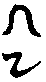

卍新纂大日本續藏經 第20冊
No.361 金光明經照解 (2卷)
【宋 宗曉述】
第 1 卷
書肆來曰請點此書余開而見之則石芝曉公金光明疏也門分十段悉解經文至第九段設三十六問答雖但解光明義實通諸經余不耐踊躍三餘之暇正烏焉誤加倭訓而刊行石芝所撰四明教行錄樂邦文類施食通覽等曩既行于世今亦此書出於戲曉公為人之意其不泯者也歟。
No. 361
金光明經照解卷上(并序)
敘曰斯經雖部屬方等非醍醐比而受持者眾乃與法華侔盛但梵夾東來備歷諸朝翻譯而經五師及中間合六本不同今世所傳即北涼曇無讖師所譯最為舊物奈何而在藏外別行先賢不曉部類之異多將合本改足讖譯或累經傳寫魚魯成訛遂致在處板籍有異至於脫文長句者有之言乖字異者有之本既不純取捨莫準往往披誦之人眯目其間者多矣愚今謹案歷代翻經目錄先示前後部帙次述台宗釋經五章三分諸品生起然後研詳龍藏合本考覈人世別行斷以天台文句為指南復用諸家義記作輔翼所有異同訛謬一皆刊正為為句讀事相餘疑從而披剝繫以境觀修顯俾夫人人發揮本有大光明藏遠於如貧數寶之譏矣十科既成列上下卷舒題曰金光明經照解噫爝火之微烏足以佐日月之騰煇而大教炳然容光必照故區區鄙志莫得而隱云也。
○一翻譯部帙
夫翻譯者學佛之喉衿釋義之元首也良以吾佛誕生迦維衛國設教滿于五天五天語言書體皆本乎劫初光音梵天下生為人種時作乃與此土蒼頡所造之字不同故須梵僧持來一一易成華言方堪講誦流衍如昔三朝僧史十科選佛竝以翻譯冠首亦此意耳茲經梵本是一此土或翻或合乃有六本。
一中天竺沙門曇無讖師於北涼沮渠蒙遜朝玄始年中翻譯一部四卷成文一十八品題曰金光明經靖邁譯經圖紀云讖師翻譯之時甞言此經篇品未足此即最初古譯舊經今世所行之本也。
二中天竺沙門耶舍崛多此翻稱藏同闍那崛多於後周武帝朝譯一部五卷號金光明更廣壽量大辯陀羅尼經智昇釋教錄云此五卷經非是全譯但於讖本續加壽量品大辯天品也。
三西天竺沙門波羅末陀此翻真諦奉梁武帝詔於大清元年譯一部七卷二十二品號金光明帝王經南山內典錄云此本於讖譯全加四品謂三身分別品業障滅品陀羅尼最淨地品依空滿願品以此四品足讖本十八成二十二品也。
四北天竺沙門闍那崛多此翻志德同達磨笈多於大隋開皇十七年譯一卷號金光明銀主陀羅尼品付囑品釋教錄云讖師真諦崛多三師所譯竝無此二品德師撿挍梵本有之是故譯出。
五大隋大興善寺沙門寶貴於開皇十七年覽前四譯其文重疊即以讖譯為本旁採諸譯芟繁補闕合成一部八卷其時獨留此本入藏餘本重者竝已削去故釋教錄云貴師以讖本十八品耶舍續壽量品大辯天品真諦所譯四品志德所譯二品總二十四品八卷成文號合部金光明經自序云此經翻譯已足。
六大唐齊州沙門義淨親往五天證聖元年迴歸河洛奉則天皇帝勅譯出一部十卷三十一品題曰金光明最勝王經此經比前諸譯文相稍廣探賾其意亦大同小異耳。
以上六本但是五譯以合部非翻梵故於今之世則存三本據湖福大藏俱存二本一者合部在化字函二者最勝王經在場字函雖只二本實具五譯以合部通收諸品故三者藏外別行本即今所解古譯讖經故天竺台教目錄云北涼讖譯金光明經四卷別行於世未曾入藏是也。
或曰藏中既有諸譯於世何故唯講誦讖經耶今以二義伸之一智者闡化陳隋開皇十七年歸寂不見唐譯亦應未睹合部所以唯講讖經者諒於諸譯義有所適莫焉二此經始自北涼迄今千有餘載披誦之盛感驗惟多得非讖譯上冥佛意下契機緣乎故北山神清曰北涼微國也觀乎聖師無讖宣譯其國非小如楚書曰楚國無寶唯善是寶斯言愚竊韙之。
○二五章大旨
天台智者國師悟旋總持宏演法華三部雄詮判釋一代聖教而於諸經雖不委悉別消若其通論大小偏圓權實之旨義亦盡矣而幸此經師甞別講玄疏流行故今解釋經題略括彼文以為學者聞思之本云爾。
玄序曰此金光明甚深無量雖太虗空界尚不喻其高廣豈山斤海滴寧得盡其邊涯是諸佛所游過菩薩所行以金為名名葢眾寶之上以法性為體義則如來所游莊嚴菩薩深玅功德以為宗照曜諸天心生歡喜以為用文號經王教攝眾典常為四方四佛之所護持三世十方亦復如是一切菩薩徧佗方以遙禮四鎮天王親雨淚以稱揚諸天覆之以天威地神潤之以地肥大辯加之以智慧功德益之以珍財若有聞者則能思惟無上微玅甚深之義開甘露門入甘露城令諸眾生食甘露味以智慧刀裂煩惱網三塗除惱熱諸有悉乾枯舉要言之一切世間未曾有事悉具出現敢託斯義輒欲興言冀涓滴入海禽鳥向山實藉片緣同均鹹色也欲觀斯經首題五重玄義。
一金光明為名又五一示通別佛說諸經皆是文字是通金光明三字是別逗化所以不同故二明翻譯梵語修跋拏此翻金婆頗婆此翻光鬱多摩此翻明修多羅此翻經三約譬喻古師以金光明三字譬三德或譬三三天台廣破之然後自約處中十種三法以釋三字所謂道識性般若菩提大乘身涅槃三寶德此之十法該括始終義含逆順橫竪徧譬一切三法方稱無量甚深法性之旨四依經立名上來舉譬多是義推依文立題方為親切故序云是金光明諸經之王創首標名彌為可用五當體受稱法性可尊可貴名金寂而常照名光大悲能多利益名明即是金光明當體法門非借世金以譬法也問舊云此經從譬得名云何矯異而依文耶答非今就文而害於譬若苟執譬復害於文義有二途應須兩存若鈍根人以譬擬法若利根人即法作譬下文云即於是典金光明中而得見我又云為鈍根故起大悲心鈍人守株守指利人不須株指(上竝玄文)。
如上天台五義釋名先達案七種立題判其所歸多云單譬斷奠此經單法為名而不失譬喻釋者唯四明法師也故拾遺記曰應知此經三字別題是法非譬經敘如來游於無量甚深法性乃住此定而便唱云是金炎明諸經之王豈非直指法性名金光明不云法性如金光明而下文所立譬喻一釋葢以諸師解金光明為世物象其實不知法相圓融大師欲示金光明海諸法融備故順諸師以三字譬具足比況十種三法格佗譬法不周然雖順佗以譬顯法其如經題是法非譬故後自立附文當體二釋斥彼義推譬喻疎遠依經就法方為親切或議四明單法定題得何意趣今謂拾遺深領玄文縱奪之旨所謂天台先縱古師約義廣演譬喻格佗譬法不周次則奪歸附文當體單法定題依文親近也。
二法性為體體是一經之主質也此經若依義則以法身為體若依文則以法性為體法性語通今以佛所游入法性為體也此體種種眾行而歸趣之類眾星之環北辰如萬流之宗東海故以法性為此經之正體當知體禮之釋與經法性意同如來之所游是貴極之法故復次體是底義得此體者窮源極底故復次體是達義得此體者通達一切異名別說故。
三三身常果為宗宗者要也此經專用佛果為宗要良由法性甚深微玅若欲顯之非果不克當知果是顯體之樞要如提綱則目整也經云釋迦如來所得壽命釋迦是果人壽量是果法果人克果法冥乎法性四佛斷疑舉山斤等無能知其數量明其能常八十是無常其常尚不能知焉能知其非常非無常若不約果佛此義難明故以三身常果為此經之宗要也。
四滅惡生善為用用謂力用也此經滅惡故言力生善故言用此且偏舉耳苦是惡果三毒是惡因惡因不除苦果不謝聖人先令滅惡因故懺悔品居先樂是善果懺讚是善因惡滅善生故讚歎品居後但懺悔品滅惡非不生善讚歎品生善非不滅惡空品則導成滅惡生善四王已下護經流通竝是生善滅惡是故此經以滅惡生善為力用也。
五方等生酥為教相教是聖人被下之言相謂分別同異論此經之教相若安般若而時異若入會三而味別案經云有一比丘讀誦大乘方等經典既言方等豈非文耶方等之教通於三乘人修如此則五味明義當第三生酥味攝四藏明義則雜藏收四教明義則當通教通教之中即得論於帶別明圓也疏釋已廣說空云此經屬方等後分乃指般若為已廣說空今云方等者結集經家以氣類相同向前集之也。
拾遺記通示五重玄義曰玄謂幽微難見義謂理趣深有所以其幽微義而有五重一經始終能詮之名所召之體即體之宗宗成力用此四言教通局相狀大師搜抉如是五義解釋一題欲令學者預知經旨然後尋文使成智行斯是道場持因靜發稱會佛心演茲奧義故不與暗證及尋文者同日而語也。
○三三分分文
吾祖別解經文祖述東晉道安法師例以序正流通三分分節經中起盡葢彼所立玅契天竺親光佛地經論因以成規(高僧傳曰昔後秦姚興詔僧講楞伽經但平讀其文都無節目興曰朕聞佛道玄深經旨韞奧如何直說略無章段諸僧無對聲流四方時襄陽有安師聞而嘆曰何以吾宗同受斯斥於是考覈經部無論大小立以序正流通三段自此方論起盡至大唐玄奘三藏譯佛地經論果有其文乃云經中總有三分一教起因緣分二聖教所說分三依教奉行分以此足顯安之所說暗與經論合也天台準彼成規者維摩疏曰經無大小例分三段者是也)所謂此經三分者。
一序分凡一品半經疏曰此經四卷一十八品舊來分割不同(云云)今從如是我聞入壽量品訖天龍集信相菩薩室為序分序有三義一次緒亦曰通序即如是我聞等五事也二敘述序亦曰別序從是時如來游於無量甚深法性至信相菩薩室此段經文內有七別所謂如來入定別敘述一十七品經文別信相懷疑別十種瑞應別信相騰疑別四佛止疑別天龍八部集眾別三發起序從其室自然廣博嚴事下文在七別內也。
二正宗分凡三品半經從爾時四佛於大眾中下訖空品為正說分此分乃有四節一從爾時四佛訖壽量品為常宗顯體二懺悔品別論為滅惡之用亦兼生善三讚歎品別論為生善之用亦兼滅惡四空品導成生善滅惡。
三流通分凡十三品經從四王品訖經竝為流通文有七節第一四王品訖散脂品明天王發誓勸獎人王弘宣於此又五一四王品明天力擁護請者二大辯品是以辯才充益說者三功德品是誓以資財潤請者說者四地神品是誓以地味益請處說處五散脂品是誓以威武安於請說聽者第二正論善集二品明人王弘經天王祐助第三鬼神品明聽經天神地祇守護第四授記品證聽經功德不虗第五除病流水品乃引昔聽經之功第六捨身品引昔不惜軀命誡勸勿吝第七讚佛品明稱揚佛法利益深重。
疏曰序者將有利益也正宗者當機辨道也流通者流名下注通名不壅欲使正法之水從今以注當聖教之筌[跳-兆+弟]不壅於來世也經中有所謂上中下語皆善即此三分之意耳。
或疑曰此經何故序分入壽量正品中耶疏釋此曰眾經例爾如維摩經無序品序在正說中大品正說在序品中涅槃序分入正品中眾經皆然何獨惑此斯經意者葢為四佛斷疑孤然故引序分安壽量中茲依義以分割不齊品也又維摩疏曰光明序正同品者斯乃譯人安品非佛所制亦非阿難結集時著也。
○四諸品生起
前之大科三分廼一經起盡之梗槩今準文句重述一十八品生起即隨文鱗次之所歸而如此者方顯如來說法品品皆有由致也。
序品者法不孤運藉緣而興如來欲說三身壽量懺讚二空導利羣生故說般若已降及鷲峰懸鑒機緣必疑我壽於是入游法性出敘二十七行偈預敘一十七品經文故有序品冠首。
如來既敘述竟機感相扣是以信相知佛入定又於諸經聞佛告魔入滅即生疑云佛說不殺施食壽命得長云何我佛八十唱滅思此義時感四佛入室舉水滴山斤地塵空界況出釋尊壽命使信相深達法報圓悟一體三身故有壽量品居次。
信相雖已除疑了常登圓地住其如一切眾生本具性德三身壽量云何證得欲為是輩翻破惑障顯經力用故信相符昔誓願入如夢三昧夢見金鼓宣無生懺偈翌辰詣佛複陳使四眾俱聞聞而修修而證故有懺悔品焉。
信相陳懺悔已如來為彼挹流尋源說前身為金龍尊偈讚法王願當來世夜夢金鼓晝如實說今日果爾填願為述此事故有讚歎品。
懺悔一品則專破惡讚歎一品則專生善此二若不得空遣蕩二俱不成欲以生法二空導成懺讚顯經力用故佛於此略說空品。
以上佛說三品半經當機辨道竟四王聞之心生悲喜於是殷勤六番白佛獎勸人王弘宣此經俾國庶晏安流通無壅故有四王一品。
四王雖則守護流通若無辨說之人此道終亦不振是以辯才天女以本神力誓以智慧辯才充益說聽之人故有大辯天品。
說聽者縱得其辯若乏四事供給則難安身奉道是故吉祥天女給以資財寶物令彼具足所須方得興隆大教故說功德天品。
說聽之人利益已周若或國界不安饑饉疾疫諸惡競起則法流壅塞於是堅牢地神以護法力翻涌地味膏腴令百穀豐成五果克茂從此好行慧施深信三寶故陳堅牢地神一品。
散脂大將本地深遠是真菩薩見之此經而為流通教觀權現鬼形統領二十八部勇以威武宿夜擁護講說讀誦之人令彼悉滅諸惡直至遇佛成菩提道故有散脂品焉。
諸天鬼神併已發誓洪通要得人王不忘吾佛付囑當以正法正治邦家自此流通無壅佛欲以此勉於人王故談正論一品。
佛既說於正論以助家國其如四眾未知出世正見感動聖賢於是佛敘昔為善集輪王捨四州之珍寶奉寶冥以聞經後於億百千劫居輪王梵釋之位今成正法之身引昔證今故宣善集品。
聞經之報若此聽法之功荐陳是故諸大菩薩以無緣慈權現天龍日月江河等神徧界弘宣資益講誦之者故有鬼神一品。
鬼神讚相唯今現益欲使聞經者速起上地以顯弘經不虗故敘三大士及十千天子一聞法性便證無生佛授彼記故有授記品。
樹神疑諸天子暫下聽法便得受記佛即說彼本因昔有持水長者為眾除病說持水者意在其子流水救魚此乃佛為遠敘因由是故併說除病一品。
遠由說竟近由當宣佛即自言昔為持水作子厥號流水偶到空澤見十千魚將之死地不忍見其踠轉起僧那心資以水膳說以因緣魚幸朝聞夕死報生忉利昔既已結大緣所以今日一聞便悟說此答於增益樹神故有流水長者子品也。
如來宣演此經授道將畢又恐弘經者吝法吝財不能忘軀為法故佛以神足力震動大地使薩埵故塔涌現于前世尊起禮樹神請問從此佛說昔捨凡身飼虎誓求微玅法身以此本生因緣誡勗貪吝弟子故有捨身一品。
佛說一經善始令終初中後竟是以三番菩薩感佛說法度脫恩深於是異口同音叩讚世尊真實功德故有讚佛一品聯于卷末。
○五辯正訛謬
是經流布寢久訛舛尤多及撿藏經考校唯見合部光明八卷所合讖譯在內頗有異同葢經諸師重譯改足乃爾今茲辯正具引合部二十餘處證以天台教章考文覈實追還古本以智者唯講讖經不見合部故其餘差舛或憑疏記或專義推苟在理或當幸無以人廢言也。
住王舍大城合部住作在字別行讖本或作在字依合部也觀經疏曰暫住曰在久停曰住一往語耳維摩記曰一切經初在住二字名異義同譯師參取之然則雖云名異義同應知此經元是住字故疏云住者佛是能住人王城是所住處準此斷知讖本是住字。
各各忿諍此句之下譯時漏略人人不信句天台已曾補足讀是經者不可不知故疏文云各各忿諍此應兩句或是翻譯脫落或是聖言尚略葢內則各各忿諍外則人人不信也此二句是犯妄語戒昔以不實欺佗今常被欺忿昔語言無實今則人無信者因果昭然也忿敷粉切恨也怒也。
廣博嚴事合部依嚴淨讖本亦有依合部者疏釋曰種種功德而莊飾之故云嚴事天台既依嚴事講解驗讖本事字為正。
瞻仰尊顏目不暫捨或讖本無目不暫捨一句合部亦闕當知此句乃結集經家語去之則上句嶄絕存之則方顯虔誠況法華普賢觀皆存二句驗此經誠不可闕。
如天真金合部作猶如真金別行讖本或作猶如天金者皆不定也疏釋曰大論以時鐵比時金以時金比海金海金比龍金龍金比閻浮洲金閻浮洲金比四天王金如是次第比至第六佗化天金比佛身金第六天金如鐵然則佛身之金超過一切如佛一時入城放金色光照地一女人禮拜金釵墮地不見其釵佛去方見今文若作如天真金猶如天金則佛身之金無超越義切詳其意當取猶如真金為正。
校飾光網法華撮要云校字正作鉸廣韻裝鉸也金玉飾也又如漢宣帝嘗以皁葢車賜霍光悉以金鉸飾之驗校字非也。
猶如過佛合部作遇佛別行讖本過遇不定當知遇字刀筆之訛經意葢言猶如過去諸佛之所成就爾。
所說微玅別行讖本或作聞說微玅合部亦作聞字今觀上下來意所字為正所謂正念思惟諸佛所說微玅法門也。
生死羅網彌密牢固合部亦作牢固別行讖本有作堅固者今謂堅即是固固亦堅也若作牢固意則不然古者造獄殷曰羑里周曰囹圄又名曰牢當知眾生底滯三有猶如牢獄故華嚴云一切眾生在三界中煩惱濁亂住苦牢獄是也此經以生死繫縛如羅網下句又言牢固則又同牢獄苦楚矣佛語多含牢字為正。
如融金聚下讚佛品云如融真金合部竝作鎔字今謂融字會也明也朗也亦有其意終不如鎔鑄真金其色晃昱以比佛身金色之勝如四十二章經後序云金在鎔而光愈爛是也況此經亦有如鑄金鋌如鍊真金之言以證此文須作鎔字。
空品別行讖本或此品初有一長行并二句偈云爾時佛為地神賢牢善女天菩薩復說偈言我從昔來為諸菩薩又品末有四句偈云歡喜布施心無吝惜觀法性空是無上智此等經文見者誰不疑其有無今撿合部乃知後來重譯者加之貴師合在讖本爾或者濫將合部之文足入別行讖本故或有之昔孤山護國二記皆謂後人妄加非也今案疏文釋此品云有四十五行偈餘竝無解驗讖本元無有者宜削去之。
我今演說別行讖本或作今我或作我今合部稱今我往往因於合本故成兩異疏釋曰我今演說者演名為廣與略相違今依此解斷以我今為正不應混於佗譯也。
和合而有此品有三和合而有今是最後妄想因緣和合而有句有字浙西諸州諷誦改為生字今準疏釋曰妄想因緣和合而有兩句是明假觀境祖文有在無宜擅呼也。
毗留勒叉天王或本作毗樓合本中亦留字若據華嚴大論諸經多云毗樓則知二字俱通梵音輕重之異耳今案疏翻毗留勒叉為增長則知留字是此經元本也。
規往討伐合部同此讖本或云親往斯後人見國家有親征之事擅改之也四明記取規字為正規計求也以法取之也討誅也傳例曰有鍾鼓曰討伐謂征伐也或本作罰謂折辱出金贖罪非經意。
身所王領別行讖本或作身所王統領合部亦無統字今謂王去呼覇王也國語曰覇把也把持諸侯之權也詳此王字所訓意義已足若加統字則字繁理寡意義俱非矣。
鬼子母與五百鬼子合部作兒子別行讖本兒鬼不定作兒子者依合部也人不見合部便謂刀筆之誤今謂讖本元是鬼子續因合部存於重譯遂成差別若云兒子對母而稱若云鬼子約貌而說一往俱通細究當取鬼子為正準鼻奈耶其母本名懽喜藥叉後生五百鬼子食王城男女人遂呼為呵棃底此翻鬼子母五百若云兒子是母之子故名為子若標兒字言意俱重若云鬼子鬼從形相子對母稱亦是鬼母生鬼子猶諺所謂龍生龍鳳生鳳也。
聞是香氣合部作聞是玅香別行讖本亦有作玅香者依合部也當知此品人王奉香前後二段今是後段初香徧天宮有兩是玅香氣蓋上下相貫也次段香徧十方則云種種香氣不但徧此乃至諸佛聞香牒其所聞則云諸佛世尊聞是香氣亦上下相貫也此中若作聞是玅香則上下差忒今所不取。
其香徧至三千大千世界百億日月(等)此經說大千世界總有九箇百億皆翻譯之悞疏記不言何以適從今先示其數次點其非俱舍頌曰四大州日月蘇迷盧欲天梵世各一千說名小千界解曰謂一日月環照四洲名一世界如是千日月千須彌千六欲天最上以一二禪天覆之名小千界也頌又曰此小千千倍說名一中千解曰此千指上小千也積成一千小千最上以一三禪天覆之名中千界也頌又曰此千倍大千皆同一成壞解曰此千指上中千也以此中千積成一千中千最上以一四禪天覆之名大千界也是中則有一千三禪百萬二禪億萬初禪以三積大故云大千非三千外又有大千也此大千界住二十增減劫經大三災壞二十增減劫故云皆同一成壞也次點其非者準感通傳南山問韋天曰余聞三千國土日月須彌等或云百億或云千百億何者是耶天答曰經中明云千百億化身釋迦牟尼佛何得百分秪言其一但時語訛略總而言之乃萬億日月須彌等為一大千量也又續高僧傳云經論竝以大千稱為百億依諸算數悉不相符翻譯之失也又釋迦方志明大千自四洲至有頂有萬億之所皆為佛化統攝據上三文細計其數大千若云百億却少九千九百億韋天所謂百分秪言其一是也余閱新譯華嚴第十三卷亦說大千世界凡列二十二重百億文義竝同今文之失嗟乎梵夾西來道途遼遠言音敻異未能盡理有如此者昔安法師謂譯經有五失本三不易正謂此也。
百億大鐵圍山小鐵圍山準長阿含起世經俱舍論釋迦方志明大千之向背說鐵圍之大小應有四重但文有廣略隱顯耳今且引起世經一文示之者彼曰四洲地心即須彌山山外有八重山八山之外有鹹海海外有山即是鐵圍四洲圍輪名一國土即此為量數滿千鐵圍繞訖名一小千界即數小千復至一千鐵圍繞訖名曰中千即數中千復滿一千鐵圍繞訖名曰大千以上四重鐵圍若分大小初重為小二三名中第四為大若論其數初小則有千百億二三漸減第四但一其大小數量若此此經與華嚴安得大小一槩稱百億耶又準俱舍頌其小鐵圍高三百一十二半由旬若依感通傳韋天所示四重鐵圍其小者齊夜摩天乃至第四重齊光陰天如此倍倍高而圍輪者欲遮佗方毗嵐猛風吹壞本所須彌山故梵語柘迦羅此翻輪圍以此山似車輪故本無鐵名譯師取山之體是鐵義立名耳。
百億非非想天上準俱舍明大千界至於中千則有一千二禪最上以一四禪覆之此顯四禪依正廣闊故珠林云初禪如鄉二禪如縣三禪如州四禪如國若至無色界非非想天則四倍之闊是知大千之上唯一非非想天而此經言百億非非想天何其多耶今謂百億數誤應云千百億已如上辨所言四禪至非非想唯一者此顯四禪非想等果報殊勝依正廣闊若論大千千百億須彌之上各有色無色天則非非想亦千百億也但彼天色細依正互相涉入而不妨各各自謂如大千界量也故正法念經謂彼夜摩天或一百一千共聚一蓮華須座不妨不隘又大論謂徧淨天六十人坐一針頭聽法不相妨礙其意爾也昔諸師記文竝不見此文謂經之誤亦不免於虗張援引也。
無量大眾合部同此別行讖本或作天眾者非葢此文是閻浮集聽是經之眾不該天類故。
涕淚橫流下善集品亦有此句合部竝作橫流別行讖本多作交流今案孤山四明護國三記竝作橫字釋義以大經亦是讖師所譯亦稱橫流故文選王粲登樓賦云悲舊鄉之擁隔兮涕橫墜而未禁或謂佛經不應用俗書類例殊不知佛教翻梵成華正欲與經史相應以導物情豈以委巷之言預寶軸耶雜華謂之雅思淵才文中王近世科經家取交字循習舊訛也涕音體鼻之汁也。
胑節怡解胑與肢同或本作支非也或本節作體字今依合部并新記竝取節字為正以空品亦云胑節手足故爾雅怡者樂也和悅之貌解佳買切舒散也。
大辨天品有本題大辨天神品合部亦無神字必後人見經內有神字私加之蟾師云經中亦有功德天神何不品目亦加之是知不可。
婆羅尼合部作娑羅尼別行讖本二字不定此必合部重譯改婆為娑遂致異同呪是密語不容去取惟讀者知之。
一幡一蓋幡字經論用字之悞久矣荊溪輔行記已曾改正故彼文曰幡字應作旛旌之總名也經中作幡幡帤字耳說文謂拭觚布也今佛法供具似於旌旗須作旛字。
南無無量百千億那由佗莊嚴其身釋迦如來(等文)此節經文疏中科為人王歸敬三寶釋迦佛也微玅法炬法也功德大辨僧也於那由佗下翻譯時失二字準善集品身得金色百福莊嚴捨身品微玅法身百福莊嚴讚歎品世尊百福莊嚴其身引此三文足顯此中闕百福二字或萬行或定慧措安皆可如法華玄說約教名智慧莊嚴約行名福德莊嚴之謂也當知此中若闕二字則自南無下凡一十八字為句竝為虗設昔謝靈運同嚴觀二師再治大經頗有添削此其例也咨爾後賢此中實闕百福二字不可不知。
審冥比丘合部重譯稱寶寘比丘寘徒堅切滿也大藏隨函經音紀一譯謂之寶寘比丘寘支豉切置也最勝翻為寶積積者聚也細究上之三字音訓詞異意同獨古讖本曰寶冥冥暗也幽也比上三訓意義碩異況讖譯之後諸師競翻其名必知冥字未允仲尼曰必也正名乎余於是名深謂未正達者試詳之。
天冠珥璫合部并別行讖本槩作耳璫今準四明神智護國三記竝云正作珥如志切蒼頡篇珥珠在耳也周禮冠珥背璚釋名穿耳施珠曰璫文選獻江南之明璫。
令是眾生合部作合字別行讖本或作今字榮師校證取令字新記取今字乃謂今是是指召之詞今取令字為正經意乃謂諸天王等各相謂言令是聽法眾生得無量威德也。
令無災禍永離諸苦(二句)多醯波醯(等四句)旃陀旃陀(等四句)以上三節經文在處板籍存沒開合不定今案疏科此品偈總有一百二行半分為六段第五段從大梵天王下有四十九行半偈是舉聽經能致天龍勸修孤山護國二記云有本多令無災禍等二句又多多醯波醯等四句皆後人妄加今難曰若除此六句則但四十八行對疏分科乃欠半偈何耶新記云若以旃陀旃陀等四句合成三句則須除多醯波醯等四句存令無災禍等二句方有四十九行半偈也今難曰若如所說則但四十九行及一句未成半行況對面不知天台以旃陀旃陀等是開四句釋義今說者當存令無災禍等二句讖本元有合部則無必重譯時刪去也次除多醯波醯等四句合部雖有自是後師重譯之文後人不曉妄采入別行讖本故今去之復開旃陀旃陀利三句為四句以天台解云梵語鳩羅檀提此翻戰無敵天台既從開翻名安得合四句為三耶作此示已始契疏中分科四十九行半偈也又復須知其合四句為三句自是合部重譯之文今準天台唯弘讖本故從開說人不知者便謂世人妄作開合非也。
違駄天神駄唐賀切違字或經本單作韋若據南山感通靈感二傳則此天初與師相見自稱韋琨韋姓也琨名也如此則字須去辵二傳始終無駄字但言韋將軍也。
愛樂親近愛樂無量二句愛字有本竝作受字皆刀筆之誤也今準合部竝作愛字若作受字則二樂字便須入聲固非經意也。
香氣馝馚馝蒲結切馚乏聞切香氣充盛之貌也或經本作馚馥新記謂俱是香氣盛貌通用今謂若云通用則後世經本無準非也。
如上所說無量功德疏云從於諸眾生下二十七行偈是聽經能令國土安樂今別行讖本竝有二十七行半偈新記謂剩上之一句今撿合部并最勝經竝有二句不可云剩今作二義伸之一恐天台講讖本時必二十七行偈後因合部重譯者加二句於其間或人采入別行讖本遂成長出二恐疏中分科之文行字下欠一半字。
以隨相修合部以字作已別行讖本二字不定今準四明記釋有玅善根是別標遠因緣以隨相修是別標現因緣此句既指現因緣固非已作之已當取以字為正。
調和六大合部作四大別行讖本或依合部作四大今謂讖本元是六大故疏釋曰六大者六腑也大腸小腸膽胃三焦兩膀胱也白虎通曰腑者為藏宮府也胃者脾之府膀胱者肺之府三焦者腎之府膽者肝之府大腸小腸心之府黃帝脈經曰上焦自頭至心中焦自心至臍下焦自臍至足廣雅云膀胱脬也腹中水府也。
直聞是言合部作得聞別行讖本有依合部者又有作值聞者合部作得聞乃諸師重譯所改若作值字乃傳寫之誤今準止觀并義例以直聞是言是初觀不思議境是知讖本元是直字。
四句宛轉合部作婉字順美曰婉非經文意若宛字謂邊高中下邊下中高宛然義也亦非經意今取新記應作踠字法華謂踠轉腹行廣韻踠者體屈之義也。
尋取枝葉與作陰涼別行讖本竝作陰字合部改為蔭字於禁切說文蔭草覆地也陰者說文陰暗也水之南山之北也今斷取蔭字則與上尋取枝葉句相承故大經曰中路有樹其蔭清涼是也。
下其囊水寫置池中寫字正須作潟如大經云阿難受持十二部經為人演說猶如潟水置之異器法華句云阿難親承佛旨如仰完器傳以化人如潟異瓶郭璞注江賦云沃焦在海水潟源處據上三文寫應作潟。
在樓屋上露臥眠睡有經本作樓臺築土四方而高曰臺良非臥處故四明記斥之曰或經作樓臺者非也。
不久當證無惱無熱清涼涅槃合部作清淨涅槃別行讖本或依合部者今謂若以常樂我淨四德為涅槃則清淨涅槃義亦無爽經中既言無惱無熱則清涼之言句義相承故梵語薩婆若海此翻清涼池是也又大論曰入清涼池即入大涅槃也。
被服衣裳經本有作帔服者誤也被皮寄切廣雅被者加也身加於衣也廣韻被者服也覆也。
良久乃穌合部作乃悟別行讖本亦有作悟者明了曰悟非此文意正須作穌如輔行引聲類云更生曰穌或通作[禾*魚]竝不從艸。
似喪愛子合部作以喪別行本似以不定新記取以字乃謂王妃痛如針刺以由喪愛子故今取似字為正葢由王妃乳出心愁其時未知喪子的信故且云似耳。
挾本業緣合部作俠別行讖本或有依合部者玉篇俠謂以權力俠輔人也廣韻挾懷也持也爾雅挾藏也今取挾字訓詰以合經意。
直我無情合部作值我有本或作值字新記護國二家竝取直字為正意謂我直是無情之物能堪是苦我若是有情則當此苦不得矣。
先所遣臣別行讖本所字或作使字者誤也合部作所字今取為正意謂先來所遣之臣耳。
玅如梵聲合部同此別行讖本有作如玅梵聲者今謂若玅字在如字上則佛聲之玅如於梵天之聲也若玅字在如字下則玅聲在於梵天佛聲如彼也經中讚佛六種微玅清淨音聲此則佛聲微玅如於梵天之聲可也。
一切眾生若聞此法皆入甘露無生法門別行讖本或無此四句者新記謂合部但齊快說是言句今檢湖福經板皆有四句新記又成妄指矣今準天台釋此品三番菩薩讚偈合有六十五行半以此考之則四句已攝其中無復疑也詳其古本或闕者諒是先代廢教經文斷落成厄於兵塵後人不校刊行遂致不全其猶秦火六經詩書多逸者也。
別行讖本之末或有囑累一品者人皆不能決其有無今案譯經圖紀釋教錄皆言讖譯金光明一十八品四卷成文實無囑累故四明記曰世有足囑累為十九品者是謬附是也至隋志德三藏唐義淨三藏二譯雖有付囑一品考彼所翻則與今讖本後有囑累文體全不相同茲乃後人倣竊法華囑累私撰附行雜金以鍮加絲以麻何人無識乃至於是人能削去之則聖教淳正矣。
或疑志德義淨所譯既有囑累返顯梵本元有讖師何不譯出耶愚曰若以彼付囑一品為妨則讖本比諸譯闕十餘品皆可疑也今以三意通之一略於可略良由此經正宗當機辨道在第一卷四王以下竝囑流通分諸天數數發誓弘通如來勤勤出言付囑其囑累品雖略之亦可也二適時之宜葢此經翻於北涼蒙遜朝爾時佛法初播人未深信廣文故讖師舉要略以譯之則與什師翻譯大論為秦人識劣十倍略九同也三翻譯尚闕余閱合部八卷唐譯十卷即知讖本之略及見譯經圖紀讖師自言此經篇品尚闕天台亦云胡本尚多又復雖云闕多而吾祖解釋已定四眾受持滋久如來尚令受持一句一偈得福豈四軸寶又容擬議哉。
此經如上校勘存沒已定謹具字數于後第一卷五千八百六十二字第二卷七千六百一十九字第三卷六千七百五十字第四卷六千七百三十四字四卷總計二萬六千九百六十五字所有梵夾上題目前後首題譯師名諱呪文注字竝係其數。
○六為為音訓
唐慈恩基法師甞著法華為為章解平聲為字有九訓謂由求當得定被作是名去聲為字有三訓謂以與助當知慈恩所訓非盡準經史而多是義推以此訓釋點攛經意無不昭然斯文近幾不傳茲偶得之因審大部補注法華鈴鍵撮要所解為為皆本慈恩之說但加成向二訓為異耳茲幸先賢典刑猶在謹箋此經為為庶一二字亦助流通也。
第一卷
常為四方(平得)為無有上(平定)而為根本(平作)若為佗說(去向)常為諸天(平得)亦為十方(平得)何等為二(平是)而為敷具(平作)而為說法(去與)我為是等(去與)為一眾生(去以)我當為是(去與)以為脚足(平作)是為麤澁(平是)常為國王(去與)以為大海(平作)為是等輩(去與)為鈍根故(去以)。
第二卷
常為諸天(平得)亦為護世(平得)為世法王(平作)為除衰患(去與)為人天王(平作)為除衰惱(去與)為修留難(去與)為作護助(去與)為消衰患(去與)則為安樂(平是)則為已得(平是)則為已能(平是)最為殊勝(平是)而為鉸飾(平作)常為人天(平得)為我說法(去與)已為得值(平是)已為供養(平是)為自利故(去以)為我等故(去與)則為成就(平是)則為不少(平是)為佗眾生(去與)則為已於(平是)為聽法故(去以)為聽法故(去以)為善知識(去與)能為無上(平作)為眾生故(去與)為令一切(去以)為與一切(去以)為欲愛護(去以)為諸眾生(去與)為無有上(平定)為諸眾生(去與)常為諸天(平得)亦為護世(平得)而為守護(平作)為是等故(去以)為是等故(去以)為我供養(去與)為我至心(去向)常為己身(去以)為諸眾生(去與)為知我恩(平當)已為攝取(平是)若為佗人(去向)為欲供養(去以)為是等故(去以)。
第三卷
能為眾生(去與)為是眾生(去助)曾為太子(平作)亦為我說(去與)何等名為(平作)為信相太(去與)為利眾生(去與)當為我斷(去與)得名為天(平是)而名為天(平作)我要當為(去與)生為人王(平作)與惡為伴(平作)若為諸天(平得)終不為是(平作)應各為說(去向)故得為王(平作)為自為佗(去以)為命及國(去以)和合為一(平作)名為人王(平作)不應為惡(平作)我昔曾為(平作)惟願為我(去與)許為宣說(去與)即尋為王(去與)為聞法故(平求)為欲供養(去以)為諸眾生(去向)爾時為王(去與)常為無量(平得)譬喻為比(平作)不可為喻(平作)而為諸佛(平得)常為無量(平得)散脂為首(平作)以為宮殿(平作)將欲為是(去與)而為上首(平作)為聽法故(去以)為我解說(去與)我當為汝(去與)為諸苦惱(平被)為是眾生(去以)為父修禮(去向)今當為汝(去與)計為治病(去與)。
第四卷
名為流水(平作)為有幾所(平是)為日所曝(平被)為捕此魚(去以)我為大王(平作)是魚必為(平被)我今當為(去與)為是諸魚(去與)復為是魚(去與)復為我等(去與)為其授阿(去與)為利眾生(去以)常為一切(平得)欲為大眾(去與)若為飢逼(平被)為其求食(去向)誰能為此(去向)為眾生者(去助)不足為難(平名)都無所為(平成)為作留難(去與)我今為利(去與)為求菩提(去以)虎無能為(平得)為眾生故(去以)汝已為得(平是)為第二王(去向)特為父母(平是)為何所在(平當)一為鷹食(平被)若為國王(平作)此虎或為(平被)為令虎子(去以)為活來耶(平是)為已死亡(平是)為眾所愛(平由)為死活耶(平是)已為得報(平是)已為都盡(平是)而為憂火(平被)或能為是(平被)常為眾生(去與)為佛作禮(去向)為諸眾生(去與)亦為十方(平得)為人中日(平作)為欲利益(去以)為是事故(去以)為我現身(去與)。
○七點示句讀
破句讀首楞嚴經悟道先賢秪一人爾昧乎讀誦者誠不可援此為例也是經句義達者已深明之但文相猶豫處姑為初入道人指示數端葢宗大海者不棄細流也。
第一卷
已曾供養過去無量億那由佗百千諸佛(句)於無量百千億那由佗阿僧祇劫(句)及無量百千億那由佗菩薩摩訶薩(句)得見十方無量無邊諸佛世尊(句)爾時亦有無量無邊百千眾生與菩薩俱(句)。
第二卷
是經能令地獄餓鬼畜生諸河焦乾枯竭(句)是經能滅一切眾生無量無邊百千苦惱(句)得第一護(句)身所王領(句)今日釋迦如來正智(句)如來過於百千億那由佗諸梵天等(句)亦過無量百千億那由佗釋提桓因(句)世尊所(句)。
第三卷
如法安住一切法如性(句)旃陀旃陀(句)利大鬼神(句)女等鳩羅(句)鳩羅檀提(句)爾時道場菩提樹神名等增益(句)過去無量百千萬億那由佗等諸佛世尊(句)。
第四卷
尊重恭敬是長者子(句)為捕此魚(句)故於上流懸險之處(句)告道場菩提樹神善女天欲知(句)日無精光(句)如羅睺羅阿修王捉持障蔽(句)大士(句)汝今真是行大悲者(句)。
○八箋釋事相
一經大義具載玄疏惟歷學游刃者鈎深自得愚謹援內外典籍解釋此經事相庶可輔大義廣見聞其猶嗜稻梁者不棄餘味也。
案大宋高僧傳立翻譯四例一譯字不譯音即諸經神呪是二譯音不譯字即佛胸中卍字是三音字俱譯即經文純是華言言四音字俱不譯即經題上是然此傳文為成四句第四且云音字不翻畢竟古今已作有無字釋義故王荊公說文曰制字之玅不獨此方如佛國是謳阿二字謳為有故向左阿為無故向右是也又復書之梵夾之上者葢以佛經對破彼外道所計故如玅樂曰阿無漚有西域一切外道經書竝以阿漚為首以其所計有無為本是以佛經立如是二字破彼不如不是若依佛法離有無見方為真道也。
經金剛刊定記云梵語修多羅或云修妬路素怛覽皆梵音楚夏也正云修多羅此翻為線以天竺用修多羅一名召四實故其四者聖教席經井索線也葢緣彼方多以華獻佛置之案上惡風吹散以線貫之又見此方聖教能持佛語得無所遺如線貫華故以線目之此方不貴線稱故翻為經斯則暗符彼方席經兼順此方儒道之經故也然則彼此雖順而未免於相濫於是加欲底二字翻之為契方能簡異此方之經則唐梵皆足也。
北涼隴右僭偽時國號也自永嘉板蕩夷狄雜處中夏通有一十六國北涼其一也內典錄云帝複姓沮渠名蒙遜元臨松盧水胡人代為北凶奴左大沮渠即宦為氏遜博覽羣史頗曉天文殺段業自稱涼州牧又破傉檀于窮泉乘勝入姑藏號西河王隴西也當晉安帝隆安五年辛丑自號北涼玄始中翻譯經論弘扇佛教讖師流寓此國傳通故以北涼標號。
三藏法師經律論謂之三藏師弘此三法故曰法師孫卿子曰師術有四尊嚴而憚耆艾而信誦說不陵知微而論可以為師矣韓昌黎曰古之學者必有師師者所以傳道受業解惑也人非生而知之者孰能無惑惑而不從師其為惑也終不解矣。
曇無讖準譯經圖紀亦曰曇摩讖此翻法豐中印度人六歲出家日誦萬言初學小乘後遇白頭禪師教以大乘十日辨論方悟大旨釋教錄云讖師一日隨中印度國王入山王渴須水不得師呪乾石出水因言曰大王惠澤所感遂使枯石生泉自後王意漸疎師曰我當呪龍入甖令旱王必請我放龍有密告者王怒遣捉讖乃齎大涅槃等經奔于龜茲龜茲多小乘學不信大教續詣姑藏宿於傳舍慮失經本枕之而睡夜忽為神人牽墮于地師謂是賊三宵皆爾遽聞空中聲曰此如來解脫之藏何為枕頭遂移高處其賊又來竟不能舉知師是聖人咸來拜謝蒙遜聞名即詔宣譯在涼七年總譯經論二十三部一百四十八卷時後魏太武聞師道術遣使請迎遜疑讖為魏設計其情倐變讖便辭以西歸將發行忽告眾曰吾怨家至雖眾聖不能救矣及讖趍行方四十里遜果密遣刺客害之聞者嗟慟莫不傷其弘法之難也如此。
譯禮記王制曰五方之民言語不同嗜欲不等達其志通其欲東方曰寄南方曰象西方曰狄鞮北方曰譯今通西言而稱譯者蓋漢世多與北狄交通譯人兼善西語是時佛法而來遂使譯人翻之因是佛經咸稱譯也大宋高僧傳曰譯之言易也謂以所有易其所無譬之枳橘由易土而植橘化為枳枳橘雖殊辛芳葉幹無異如西域尼拘律陀樹即東夏之楊柳名雖不同樹體是一。
品中阿含云梵語跋渠此翻為品疏云品是類義此中文句氣類相從節為跋渠如律中五篇七聚也新記云氣類者借喻以顯氣謂氣候類即種類如陰陽二十四氣之不同種類之差別也繫辯曰方與羣分物與類聚孟子曰故凡同類者舉相似也。
佛梵語佛陀此云覺者對迷愚者說為覺也佛地論云能自開覺亦能覺一切有情如睡夢覺如蓮華開故名為佛金剛事苑云誰不覺知誰能覺知體同性徧一而已矣當知此中言佛雖標通號其實以通召別乃專指一經教主釋迦文也。
住王舍大城此城在摩竭提國是佛乞食游化之地也大論云梵語羅閱祇伽羅此云王舍城過去有王名曰天羅無子出狩值牸師子眾散王與交通月滿忽來殿上生子訛言天賜養為己子足上斑駁號斑足王後紹王位性喜噉肉廚人遽闕乃取新死小兒為膳王美之廚人日捕不歇舉國愁怨千國小王興兵廢王置耆山中諸羅剎眾輔之為鬼王誓取千王祭山神得九百九十九王唯少普明後得之普明乞歸布施却來就死駁足問之王言得聞聖法故爾因此廣讚慈心毀呰殺害駁足聞法即證初地千王於是各取一滴血二莖髮賽山神願駁足與千王共立屋舍都五山中為大國故名王舍城又百姓在五山內作舍七度被燒自謂薄福王有福力其舍不燒眾議排我屋舍為王舍由是免燒故稱王舍及駁足得道赦千王於此地名為王赦經家借為屋舍字耳。
耆闍崛山中法華句云梵語耆闍崛此翻靈鷲山峰似鷲故又鷲鳥於山南尸陀林食死尸竟棲息此山故又聖仙神靈行居故西域記云梵語姞栗陀羅矩吒山唐翻鷲峰亦曰鷲臺舊稱耆闍崛訛也此峰接北山之陽孤標特起既棲鷲鳥又類高臺空翠相映濃淡分色大論云耆山是三世諸佛住處若使大千劫燒更生我常住此說法度生但眾生結縛之深故不見我崛達物切。
過諸菩薩過字去呼越也下文過諸天香過夜至旦過於蜂王立過于膝過於人眼出過一切如來過於亦過無量過於今日過是夜已不過己身才能過人過算數劫以上十三過字竝去呼。
是金光明諸經之王疏釋曰若取文為經即三種俗諦若取理為經即三種真諦若取文理合為經即三種中道若說餘諦是經而非王若說中道是經復是王於九種經中而得自在天台此文隱略難見先賢解釋凡數十家四明記以藏通別三教真俗對三種真俗以圓接通圓接別圓當教三教真俗體是中道對三種中道四明建立雖爾奈何霅川岳公鯨吞其說故義編曰四明所立初如七二後似五三究而詰之二俱不當七二無中道之稱五三無三藏之名進退無拘規矩安在然四明以七二諦消通經王法相備具偏圓俱攝正符方等四機普被之旨經王統王自在之能人能祈去霅川之難則四明之道自耿光矣。
東方阿閦南方寶相西無量壽北微玅聲大論云閻浮四方東為數始以日初出故又東是春方故然此四佛果上同化者行因同故觀佛三昧經云過去有佛號曰空王入滅度後有四比丘同學破戒後因入塔諦觀佛像得念佛三昧諸佛現前授記今於四方悉得成佛東方香積世界佛名阿閦南方歡喜世界佛名寶相西方安樂世界佛名無量壽北方蓮華莊嚴世界佛名微玅聲阿閦此翻不動閦或作[門@豕]初六切字統曰[門@豕]字出釋典微玅聲最勝經名天鼓音護國記云天鼓音從喻為名也。
親厚蒼頡篇曰親愛也釋名曰親襯也言相隱襯也索隱記曰親厚即六親也漢書曰以奉六親應劭曰六親者父母兄弟妻子也。
惡星災異疏云惡星若熒惑亂行麻彗暴出也災異者風雨雪霜等乖候也楞嚴云娑婆世界有八萬四千災變惡星二十八大惡星出現世時能生種種災異張無盡註曰惡星非凶惡之惡乃成惡之惡也天象皆稟四大五行精氣留滯而不圓通非佛慈悲以違其性則災數應之索隱記云若能內觀法性達罪本空均生佛於自心起慈悲於法界惡星之變何患乎不滅。
眾邪蠱道疏云人邪鬼邪法邪名眾邪法邪謂一切外道經書也蠱道毒鬼也四明記云事釋乃佗鬼毒害於人如說文蠱謂腹中蟲也楞嚴云貪恨為罪是人羅畢遇蟲成形名蠱毒鬼理解乃自心三毒為蠱能害法身慧命也大藏經音云以呪術害人曰蠱道生經云有人專行蠱毒事神得富人知無肯與親乃於異國求婦婦元事佛行慈化之遂止戒疏鼎山記云以毒蛇相食強者則變為蠱入人腹中為食蠱酒蠱等燕閑錄云南方人養金色蠶食以蜀錦取其糞置飲食中以毒人人死蠶喜能使人富而遣之極難雖水火刀刃不能傷但多損金銀置蠶其中遣之於路人見取之蠶即隨往謂之嫁金蠶也玉堂閑話曰有中書于遘中蠱醫治無門偶一釘鉸者過門自言某亦甞中此因遇至人鈴出而愈某傳得此法于忻然祈之彼曰來早請勿食某當來矣既至即令張口乃執鈴以候之及著俄差跌而失明日又侯之如前一鈴而中其蛇赤色如釵股乃長二寸急命火以焚之于遂安也投荒錄曰新州有草藥名吉財治蠱神用無比謂之吉財者葢昔人遇毒有奴號吉財得是藥因以為名其狀似芍藥遇毒人潛覔二三寸剉細加少甘草煎服之得吐即愈也委如大平廣記。
臥見惡夢疏云心靈潛密業現其中夢見不適意事也廣韻寐中神游曰夢發真鈔引律云亂意睡眠有五過一惡夢二諸天不護三心不入法四不思明相五喜出精周禮有占六夢之吉凶一正夢無所感動平安自夢也二愕夢驚愕而夢也三思夢覺時所思之事也四寤夢覺時所道之事也五喜夢喜悅而夢也六懼夢恐懼而夢也當知周禮六夢正夢唯一夢是好惡之先徵是故古立占夢之官後代廢之葢世人澆偽多假託故。
當淨洗浴釋籤云通論諸洗皆名為盥若別論者洗手曰盥洗足曰洗(先典切)洗頭曰沐洗身曰浴說文曰沐者濯髮也孟子曰雖有惡人齋戒沐浴則可以祀上帝。
夜叉之眾維摩疏云夜叉此翻輕疾有三種一在地上二者居空三者在天為天給使以惡毒故受夜叉報往修乘故見佛聞法曾施象馬故能飛行闡義鈔云新云藥叉此翻勇健能飛騰空中舊翻捷疾佛初成道及轉法輪傳聲梵天即此鬼也今法會召請傳迸符牒以奏上帝乃是此神正其名實須當以捷疾靈使呼之。
尼連河神西域記云於摩竭提國戒賢論師伽籃西南行四五里渡尼連河至伽耶城此河又名熈連跋提此云不樂著河神主此河也。
八部所敬一天二龍三夜叉四乾闥婆五阿修羅六迦樓羅七緊那羅八摩睺羅伽為八部也所謂人非人者或言緊那羅頭有一角即人非人觀音義疏云今不取人非人釋緊那羅乃總結八部耳舍利弗問經謂八部皆名人非人或謂人即人眾非人即非人眾如華嚴列八部竟乃云人眾非人眾也楞嚴集解云六道之中唯除人道餘五道悉號非人又四天王下各領二鬼名為八部(云云)維摩疏謂八部之義多所關涉葢如上所出不同故部即部伍周禮謂五人為伍又部是黨義釋名謂五百家為黨又部是曲義如漢書謂行無部曲注云將軍皆有部曲。
亦為十方竹菴草錄云諸經盛談十方唯首楞嚴經以十方謂之十虗葢虗空無礙徧攝十方故謂之十虗也。
歡喜悅豫悅亦喜也經典互訓耳廣韻豫羊庶切安也逸也桂苑珠叢曰心安和悅謂之豫。
人身人道孔氏傳曰天地所生唯人為貴禮記曰人者天地之心五行之秀氣也莊子曰無為而尊者天道也有為而累者人道也梵語布路沙此翻人婆沙云人道名止息意謂六道中能止息忍耐故。
爾時尒與爾同或作尒非也說文作[爾-不+(企-止+小)]別行義疏云爾時者爾言即也謂即說此品之時也玅樂記云凡言爾時者皆指前事之末後事之始也。
有菩薩摩訶薩法華句云具足應云菩提薩埵摩訶薩埵譯師嫌繁略去餘字菩提言道薩埵言心摩訶言大薩埵言眾生即大道心眾生也大論云菩薩初發心誓度於一切能忍成道事不動亦不破是心名薩埵佛地論云有三大事名摩訶薩一數大以無量故二德大謂住大乘故三業大謂能息眾生諸煩惱故或經翻為開士開發眾生信心故古翻高士升出凡夫小乘故藏疏翻為覺有情亦曰大勇心維摩疏云菩薩之名既爾翻譯不定應留梵語也。
名曰信相最勝經名為玅幢護國記云玅幢從喻立信相約法稱疏云信相者信家之相在似道中下文見有一人似婆羅門似位機興知非真擊又真似之位如普賢位鄰尊極信相稱似未敢定判。
壽命短促疏云壽者命也謂報得命根連持不斷名之曰壽經音義云壽亦命也不分而分壽取一期之名命取人之生分蓋異名耳。
方八十年玉篇方者正也始也疏云世壽有三品下方四十中方八十上方百二十下方少夭上方太老中方不少不老佛八十唱滅表住中也信相不作此解是故生疑然則若準周書異記佛生周昭王甲寅歲滅於穆王壬申歲其壽止七十九凡經論言佛壽八十者且約大數言之也。
一者不殺疏云夫命者眾生之所共惜奪而害之居然大苦宥而放之則為快樂華嚴云殺生之罪能令眾生墮三惡道後生人中得二種果報一者多病二者短命梁周顒與何胤書曰變之大者莫過死生生之所重莫過性命性命之於彼極切滋味之於我可賖讀斯文者宜動心焉。
二者施食流水品云我今已能與此魚食未來之世當施法食疏云夫食者依報得之則命存失之則壽殞百味甘漿依報食也身肉骨髓正報食也此皆事施經言法食者世間法味出世間法味出世間上上法味也。
於無量百千億那由佗阿僧祇劫華嚴明十大數謂阿僧祇無量無邊無等不可數不可稱不可思不可量不可說不可說不可說梵語俱胝此翻億那由佗此翻京阿僧祇此翻無數算經云黃帝造算法總十四重謂一至十(一)百(二)千(三)萬(四)億(五)兆(六)京(七)垓(八)秭(九)壤(十)溝(十一)澗(十二)正(十三)載(十四)從萬數已上有三等倍法下等十十變之中等百百變之上等倍倍變之佛教明數之廣如俱舍論明五十二數謂數始為一一十為十十十為百十百為千十千為萬十萬為洛叉十洛叉為度洛叉十度洛叉為俱胝十俱胝為末陀十末陀為阿庾多(那由佗也乃至)十大跋羅攙為阿僧祇(阿僧祗當最末五十二數)又佛本行集經悉達太子與頞誰那大算師比挍算數太子乃言一百為千(乃至)百千萬壤名十溝若入如是算法雖須彌山斤兩銖皆悉能知委在彼文須者撿之梵語劫波秦言分別時分珠林云劫是天竺紀時之名猶此方年號也。
乃至己身骨髓肉血充足飽滿飢餓眾生疏云骨髓肉血此彼相望為己智慧推之非己如王子飤虎尸毗貿鴿皆父母遺體非己身也己身者法性是也如大論云持戒為皮乃至微玅善心為髓等。
天紺瑠璃桂苑珠叢曰深青而佯赤色者謂之紺佯字余常切弱也世間五彩不顯此色天之紺青獨見佛經也。
猶如如來所居淨土攝大乘論云所居之土無五濁眾生名清淨土珠林云世界皎潔目之曰淨即淨所居名之為土。
純以天衣而為敷具諸天以六銖為衣言其輕細耳八銖為錙二十四銖為兩章服儀以坐具為敷具十誦律以敷具同氈席之形。
師子座上西域記云天竺君王朝座彌復高廣珠璣間錯謂之師子座如此方王者之龍牀也佛是法王故坐此座大論云師子座為佛化作為實有耶為金作耶答非實有也佛為人中師子所坐之座故以名之蓋師子是四足獸中獨步無畏能伏一切佛亦如是也。
恒河沙等諸佛世界西域大雪山頂有阿耨達池而有四河流出東自銀象口派出殑伽河亦曰恒河此翻天當來以其從高山頂而下狀若天來也池之南派曰信度河此翻驗河池之西派曰徙多河此翻泠河池之北派曰縛芻河此翻青河流及此土名黃河也經音義云恒河之沙白色至細如麵與水同流以手掬之急把則沙隨水出大論云佛及法身菩薩能知恒河沙數論又云閻浮提諸大河亦有過恒河者何故佛常以恒沙為喻耶答恒河沙多餘河不爾又恒河是佛坐處游行處弟子常見故以為喻又諸經書皆以為福德吉河若入中浴罪垢皆除以人敬事此河故以為喻。
雨諸天華續僧傳云大隋仁壽中莘州奉勅建舍利塔感天華徧空而下人得半合因以進奉時有梵僧闍提斯那在京帝即宣問天華何似那答曰天華似薄雲母若飛則不委地縱委地則光明奇勝帝乃潛以好雲母及天華混為一箱召羣臣以觀之眾無別者再召那以問那識天華而退雲母帝深服之。
作天伎樂華嚴云自在天中有一采女名曰善口此女口中常出音聲則與百千種樂相應垂裕記云女樂曰妓蒼埤云妓美女也以美女為樂因謂之妓樂準此伎須從女為正伎技俱非也。
所有眾生眾字本去呼今語便作平聲眾言其多也梵語僕呼善那此翻眾生大乘同性經謂眾生是情想和合義四大界入等會對而生故阿含經謂劫初光音天下生男女尊卑共生故云眾生此約最初說也若攬眾陰而有眾生此據受報說也若言處處受生此約流轉說也至大唐奘法師所譯經論皆稱有情蓋欲簡異無情也然則雖有簡異之言若望上三義則俱失矣。
以佛神力首楞嚴經云佛住不二法能作神通法華疏云神名不測力名幹用不測則天然之體深幹用則轉變之力大。
釋迦如來本起經翻釋迦為能仁本行經翻牟尼為寂默能仁姓也寂默字也姓從利物字從契理以利物故不住涅槃以契理故不住生死然燈記號懸合化事吾佛降生故託釋種或翻釋迦為能文字翻儒即能儒也或翻直林以佛始祖懿摩王擯斥四子於雪山直林後歸德如市鬱為強國從此遂以直林為姓又華嚴名號品翻為渡沃焦郭璞注江賦曰沃焦在東海外海水瀉源處。
魔眾大論云梵語魔羅秦言奪命或翻殺者即波旬天也此人依佛法得善利後反加於毀壞也樓炭經云磨宮縱廣六千由旬在欲色中間住本行集經紀佛成道時一切諸魔波旬來到佛所皆悉被降廣在彼經輔行云古譯經論魔字從石自梁武來謂魔能惱人字須從鬼故字訓家謂魔字出釋典今則通存二義若云奪命即從鬼義若從磨訛是從石義故樓炭經言其磨壞嫉妬如石磨磨壞功德也然則若云梁武方改魔字且諸經多是梁前所譯何竝從鬼耶曰後人從改以書也。
梵眾即十八梵天眾也梵語梵摩此翻清淨蓋此類天不為欲塵所染故甄正論云梵字此土元無出自佛經乃古譯經師造用詮天竺之音至棃葛洪方收此字於字苑訓以為淨後大隋陸法言寫入切韻始為此土之書也。
沙門或云桑門范曄後漢郊祀志曰沙門漢言息心剔髮去家絕情洗慾而歸於無為之人也瑞應經云息心達本源故號為沙門或云沙門那此翻乏道大經云斷一切乏斷一切道修八正道之人也僧史略引南山云沙門者凡聖同稱之號也西天異道亦號沙門故須釋字以別之二種合稱猶此方稱爵里及姓氏也。
婆羅門天竺姓氏有四婆羅門其一也本行集經佛說偈言清淨無有諂曲心內外正定常安住如是修行諸梵行是名婆羅門種姓維摩疏云婆羅門此翻外意世世相承外學高良之士也又翻淨行是梵天之遠裔其類自云從梵天口生。
諸龍述異記云水虺五百年化為蛟蛟千年化為龍龍五百年化為角龍又五百年化為應龍廣雅云有鱗曰蛟龍有翼曰應龍有角曰蚪龍無角曰螭龍方言云未能升天曰蟠龍元命包曰龍陰中之陽故舉而雲興括地圖曰龍池之山四方高中有池方七百里羣龍居之說文曰龍鱗蟲之長能幽能明能小能大能長能短春分而登天秋分而入川抱朴子曰有自然之龍有蛇蠋化成之龍佛教者梵語那伽此翻曰龍準須彌藏經龍有五種謂象龍蛇龍馬龍魚龍蝦蟇龍諸經要集云蛇龍乃其本類餘皆旁類故知蛇龍為五龍之長也觀音義疏云龍有四種一守天宮殿龍二興雲致雨龍三決江開瀆龍四守輪王寶藏龍僧祇律云龍有五事苦謂生時眠時淫時瞋時死時一日之中三過皮肉落地熱沙蔟身難陀經云龍有三苦一者雖食百味最後一口化為蝦蟇二者端正采女為夫婦即變為二蛇相交三者背道布鱗沙石生其中痛乃連心起世經說龍通胎卵溼化四生龍王經云龍昔在人中作大福田受大福德不持齋戒受惡苦報而不免金翅鳥難維摩疏云龍是畜生道收正報似蛇依報七寶宮殿與諸天等亦能變形為端正人戒緩乘急聞法悟道。
鬼神尸子曰天神曰靈地神曰祇人神曰鬼易繫辭曰精氣為物游魂為變是故知鬼神之情狀禮曰明則有禮樂幽則有鬼神廣弘明集云鬼者歸也死之所入神者靈也形之所宗鬼劣於人唯止惡道神勝於色普該情趣心有靈智稱之曰神長阿含云一切舍宅街巷丘冢皆有鬼神竝以所依為名輔行云昔有孫瞻執無鬼論忽有客至言及世之鬼神客乃理屈作色言曰鬼神者古今賢聖共許君何言無即僕是鬼也忽變形不見。
乾闥婆法華句云梵語乾闥婆此翻嗅香蓋此神以香為食故亦翻香陰以其身出香氣故觀音義疏云乾闥婆是帝釋俗樂神居須彌山南金剛窟中帝釋欲作樂其心則動也。
阿脩羅正法華稱阿須倫或名阿素洛阿蘇羅皆梵音輕重也婆沙論翻為非天謂此一類雖天道攝而多諂詐無天威德如人行惡名為非人也華嚴音義云阿脩羅此翻形似天舊翻不酒謬也蓋梵語窣利此翻酒而與素羅聲近是故成訛今謂諸文明脩羅既制酒戒不妨義翻當知脩羅不酒有二義一昔持不酒戒二見諸天飲甘露酒即採四天下華置大海中釀酒以魚龍業力酒味不成因此斷酒又翻無端正故長阿含云脩羅生女極端正生男即醜陋是也楞嚴經說胎卵溼化四種脩羅大論明脩羅噉食百味最後一口變作青泥婆沙謂修羅居須彌空缺處或鹹海中輔行云修羅曲心所覆嫉賢忌行。
迦樓羅此翻金翅鳥靈感傳云翅鳥居鐵圍山舒翼之時三十三萬里毬身之時六千由旬鼓翼一飛即數千里從一鐵圍山巡一大海日食數百龍又食一龍王騰身霄漢數萬由旬下觀壽盡之龍攢身入海海水未合取龍而出觀佛三昧經云翅鳥壽八千歲將死之時諸龍吐毒無由得食從金剛山透海穿地不能過風輪從孔涌出還金剛山如是七反命終火起衝心成如意珠龍得此珠即為王矣華嚴音義云或云揭路茶此翻大嗉項鳥或翻食吐悲苦聲以此鳥凡取龍食先納嗉中然後吐食其龍猶活楚痛出悲苦之聲也。
緊那羅華嚴音義云緊那羅此翻疑神謂此神貌似於人頭生一角見者生疑云此神人耶非人耶故稱疑神或翻猶豫丈夫以其形如人而口似牛使見者猶豫故舊翻歌樂神從技翻也居十寶山中。
摩睺羅伽維摩疏云摩睺羅伽此翻蟒神亦云地龍無足腹行即世間廟神受人血食祭祀悉入蟒腹者戒緩故墮鬼神中多瞋故蟲入其身而唼食之以昔少行布施謙敬故得人供養以乘急故值佛聞法得道也。
一切諸水可知幾滴首楞嚴經云如來發明世間出世間法知其本因隨所緣出乃至恒沙界外一滴之雨亦知頭數。
諸須彌山可知斤兩長阿含云四洲地心即須彌山須彌或言須迷盧此翻玅高四寶所成故言玅出七金山故曰高俱舍云入水皆八萬玅高出亦然言此須彌高八萬由旬入水亦爾也大論云有法可量但力劣不能量耳譬如須彌海水斤兩滴數佛菩薩能知諸天世人所不能知耳漢書律曆志云權者銖兩斤鈞石也所以秤物平施知輕重也本起於黃鍾之重一龠容千二百黍重十二銖兩之為兩二十四銖為兩十六兩為斤三十斤為鈞四鈞為石說文曰八銖為錙二十四銖為兩量字平聲呼謂籌量也。
一切大地可知塵數大論云佛及法身菩薩能知閻浮提中微塵之數何況恒河沙論又云微塵有大有中有小大者游塵可見中者諸天所見小者聖人天眼所見慧眼觀之則無所有以實性無故婆沙論云微塵至細不可破不可燒本行集經十三卷悉達太子與頞誰那大算師捔試算法乃言一由旬微塵數多少乃至閻浮提縱廣七千由旬如是四洲縱廣由旬有若干微塵乃至大千所有之數皆悉知之文廣不錄須者撿之。
發阿耨多羅三藐三菩提心華嚴音義云阿此翻無耨多羅此翻上三藐此翻正三此翻等菩提此翻覺總云無上正等覺也耨字此方經史元奴構切按梵音應作入聲故廣韻家耨字出釋典是也藐字篇韻元是橫角切而佛經乃借為彌略切此字呼者多訛也準高僧傳立五種不翻第四順古不翻即阿耨菩提是此言實可翻之但自摩騰來即存梵音是故後譯傚之竟不改也肇論云菩提之道不可圖度高而無上廣不可極淵而無下深不可測大包天地細入無間故謂之道。
懺悔品梵語懺摩此翻悔過四明記曰經文華梵竝列天台以首釋懺以伏釋悔等斯是善巧說法之相不可以華梵訓詁為責也按疏解釋此經之懺乃有三種七日七夜朝暮淨心即作法懺也於其座處得見文殊普賢即取相懺也五陰舍宅觀悉空寂即無生懺也三意宛然故能滅諸惡蕩三障顯經力用也。
夢見金鼓疏云夢見金鼓者入如夢三昧也又入觀如夢出觀如覺新記云如夢三昧觀一切法空如夢無實唯佛無夢因位則有孤山謂寓言表法非是實夢助宣記云四果支佛猶有夢唯佛不夢以無習氣故莊子曰古之真人其寢不夢此語似同然則信相夢金鼓進不與佛無夢同退不與臥見惡夢同乃與下文善集輪王夢寶冥比丘法華又夢作國王方等經求十二夢王是同覽者悉之。
其狀姝大姝尺朱切毛詩曰靜女其姝傳曰姝美色也方言曰趙魏燕時以好為姝疏謂姝者勝義深大義。
眷屬圍繞說文眷者顧也廣韻屬者類也自顧本類名為眷屬玅玄明五種眷屬一理性眷屬即一切眾生理性相關任運父子也二業生眷屬謂曾下種結緣者三願生眷屬謂忘願所牽者四神通眷屬謂以神通輔佛行化者五應生眷屬謂破無明得法性身應生同居者釋籤云佛說法必被緣受道如父母遺體攬此成身得為天性性親愛故名曰眷更相臣順故名曰屬法華句云圍繞者行旋威儀也表四門機動闡義鈔云周迴曰圍坐徧曰繞。
以枹擊鼓枹縛尤切說文曰枹擊鼓柄或作桴爾雅曰枹遒木魁瘣郭璞注曰謂樹木叢生根枝節目盤結磈磊世本曰夷作鼓以桴擊之大經云鼓則因皮因人因桴和合出聲。
頂禮佛足大論問云應言禮何言頭面禮足答人身貴者頭也五情所著而最在上足第一賤履不淨處最在於下以貴禮賤重供養故論又云禮有三種下禮揖中禮跪上禮稽首稽首者頭面禮足也是以佛毗尼中下座兩手捉上座兩足以頭面禮歸敬儀云此土設敬遠拜為重天竺設敬近形為至故陳如久不見佛來禮佛足以面掩於佛足也。
右繞三帀帀者徧周之義字通作迊經論多訛作匝大論云如法供養必應右繞西域記云旋繞或一二三宿心別請數則不定五戒經云三帀表敬三尊滅三惡破三毒出三界也法華句云佛初出世淨居天下為化像到已右旋旋已敬禮此旋禮之元始也然此右繞之義先賢乃有兩說一云自我之右面東而北轉也引例則右偏袒右肩右膝著地等一云自佛之右面西而北轉也此說南山歸敬儀云經律之中制令右繞故左繞塔者為神所呵令行者順於天時故面西而北轉比見有僧非於此法便東迴而北轉為右繞天竺梵僧填聚京邑經行旋繞目閱其蹤竝從西北轉以順天道如日月焉長阿含云日天宮殿再從東出右繞須彌當於西沒珠林亦同此說更有諸文不能盡載(云云)。
說如是偈貽謀鈔云凡言偈頌西域乃有四種一阿耨窣覩婆頌此不問長行與偈但滿三十二字即為一偈二伽陀此翻諷誦或名直頌謂以偈說法非頌長行舊云孤起偈也三祇夜此翻重頌四蘊馱南此翻集施頌謂以少言攝於多義施人誦持者。
地獄釋名曰獄者确也言确人情偽也輔行謂地獄在地之下故楞嚴云九情一想下洞火輪輕生有間重生無間純情即入阿鼻地獄若沈心中有謗大乘毀佛禁戒誑妄說法虗貪信施濫膺恭敬五逆十惡更生十方阿鼻地獄宗鏡云地獄既是非情云何動作答是有情業力所感令受罪者自見其事如成劫風雖是無情亦能成劫楊文公談苑云人疑佛教地獄受苦太長余曰律文有流三千里地甚遠徙三年期甚長造罪之初止一念耳。
餓鬼大論云餓鬼飢渴若趣江河護水神以鐵杖逆打設無神護水自然竭或時天雨則化為火楞嚴云七情三想沈下水輪生於火際身為餓鬼經百千劫玅玄云餓鬼有三種重者飢火節燄漿水絕名中者伺人蕩滌膿血糞穢輕者時得一飽加以驅迫填河塞海又正理論明餓鬼有九類即施食禮文召請者。
畜生輔行云畜字通諸究許六向究三切若作禇六即六畜牛馬雞豕犬羊也準此則攝趣不盡新婆沙云形旁行旁故名旁生形旁則身多橫住行旁則心意不正也楞嚴云情多想少流入橫生重為毛羣輕為羽族甘露味論云畜生壽有一彈指頃半日一日乃至一歲一劫等不同正法念經云畜生不同有四十億大論之中以三類攝盡謂晝行夜行晝夜行又有水陸空居之異。
貪瞋癡等疏云貪心如海納流無有滿時瞋心如火益薪展轉彌熾癡心如膠黏結如冰足水法界次第云若以迷心對一切順情之境引取無厭即是貪毒若以迷心對一切違情之境便起忿怒即是瞋毒若迷一切事理之法無明不了妄起諸邪即是癡毒止觀云三毒惑心一念心起身邊利鈍八十八使乃至八萬四千煩惱。
現在世雄大經云如來十力雄猛而師子吼摧破魔軍令知六師非師子吼法華云大雄猛世尊新記云草木之精秀者為英獸之羣特者為雄如來亦爾力能降魔制外故曰世雄。
兩足之尊福足慧足名兩足尊新記云佛於二足四足多足一切中尊而言兩足尊者以諸類中兩足為貴即人天也故大經釋天人師云諸眾生中唯天與人能發菩提心能得三乘果故。
及父母恩最勝經云人從父母稟身十月懷抱三年鞠養撫念惟惟始能升頭載髮那忽違恩背義天雖大不覆此人地雖厚不載此人此人命終直入地獄如是逆罪應須懺悔。
凡夫愚行廣韻凡者非一也大經云有取著名為凡夫謂取著於色等生貪心者大威德陀羅尼經云於生死迷惑流轉住不正道故名凡夫佛性經云凡夫以身見為性。
無知闇覆覆字篇韻通三音一方福切審也一扶富切伏兵也一敷救切蓋也此云闇覆當用蓋義敷救切呼之凡諸經覆字人多悞呼請以上三義正之。
親近惡友近字宜作去聲呼廣韻訓附也若作上聲則訓迫也固非經意下文親近非聖近惡友難常當親近愛樂親近竝同去呼。
煩惱亂心止觀云煩惱是昏煩之法惱亂心神又與心作煩令心得惱即見思利鈍也高僧傳德山師云煩惱之法道俗同弊政煩則國亂心煩則意亂水清則魚石可見神清則想倒可識學清簡者尚自諠煩況在亂使焉可得道。
因生慳嫉慳吝財也嫉妬財也玉篇謂爭色曰妬垂裕記云有財不能惠曰慳惱佗心生熱惱曰嫉。
姦諂作惡姦古顏切切韻謂私也詐也諂丑琰切諛也曲媚也三蒼曰佞言曰諂乃巧言令色曲取人意也遺教經疏云希其意而道其言曰諂其言諂者其心必曲。
及以女色呵色欲經云女色者世人之枷鎻如蛾赴水自取焦爛雖鋒鏑交至甘心受之譬如停淵澄濤蛟龍居之金山寶窟師子處之室家不和毀宗敗族實是陰賊若能棄之則是破枷脫鎖也孤山四十二章經注云色欲能吞噬善根禍害身命其猶虎口也夫夏以末嬉滅商以妲己喪周以褒姒衰晉以麗姬亂吳以西施敗且天下國邦而致傾覆罔不由其女色況一家一身乎。
誹謗正法廣韻誹音非又通方味切若作上聲則謬矣法華云若人以不善心於一劫中常毀罵佛其罪尚輕若人以一惡言毀訾在家出家讀誦法華經者其罪甚重此顯謗法之罪重於謗佛也。
驕慢放逸廣韻憍恣也本亦作驕俱舍論云慢對佗心舉憍由染自法輔行云自矜曰憍陵佗曰慢大經云菩薩因於受樂生大驕慢或因說法而生驕慢或因精進而生驕慢乃至或因豪貴而生驕慢。
住於十地華嚴瓔珞廣明菩薩十地所謂歡喜地離垢地發光地燄慧地難勝地現前地遠行地不動地善慧地法雲地通名地者中道為地持眾善法也。
十種珍寶以為脚足疏有二釋一以十地為脚足珍寶者十地因可貴諸地即是珍寶也十地是果家之本故言脚足二以十度是十地之脚足乃以檀為初地之足檀足若滿得入初地乃至智度足滿得入第十地也十度者於六度外加方便願力智也。
度三有海婆沙論云世有三有一欲有二色有三無色有有者一切有漏法是佛言若業能令後生相續是有義又有生有滅故名有又墮苦集諦中是有義然此三有若約開說則成二十五有輔行結成頌曰四洲四惡趣六欲并梵天四禪四空處無想五那含。
根力覺道法界次第云信進念定慧能生善法名根能排五障名力名同義別也覺謂七覺支一擇法覺支二精進支三喜支四除支五捨支六定支七念支通名覺分者有到果覺知之支分也道謂八正道正見正思惟正語正業正名正精進正念正定通名正道者謂俱離偏邪至涅槃正道故。
諸陀羅尼大論明陀羅尼名慧性翻為總持集種種善法持令不散失故譬如完器盛水不漏也又翻遮持遮惡不起持善不失也玅樂記云陀羅尼是如來難思祕密真言種子。
能除眾生一切怖畏華嚴明離怖畏有五所謂火不能燒毒不能中刀不能傷水不能漂烟不能熏貪火不燒瞋毒不中惑刀不傷有流不漂諸覺觀烟不能熏害。
遠離十惡修行十善四十二章經云眾生以十事為善亦以十事為惡謂身三惡殺盜淫也口四惡兩舌惡口妄言綺語也意三惡嫉妬恚也此十不順聖道名惡若悔之而歸至理十善行耳大經云如十惡法有上中下上受地獄中受畜生下受餓鬼十善之業定在人天有四種下生北洲中生西洲上生東洲上上生南洲。
安止十住瓔珞經明十住菩薩謂初發心住治地住修行住生貴住方便具足住正心住不退住童真住法王子住灌頂住此十通名住者別教住但中圓教住不思議中。
逮十力尊爾雅曰逮及也方言曰自關之東西謂及曰逮佛具十種力見華嚴經謂是處非處力業力定力根力欲力性力至處道力宿命力天眼力漏盡力通名力者謂得如實智用無能勝壞故。
所有善法悉以迴向括諸經論凡言迴向不出三種所謂迴事向理迴因向果迴己功德普施眾生義見天台大四教義。
六趣險難毗曇論云趣者名到亦名為道謂彼善惡業因道能運到生處故亦是依所造業趣彼生處故又趣是歸向之義所造之業歸向於天等也從六趣險難下至如是諸難其中總有一十四箇難字疏曰若作難易之難此是惡來遮善使善難成也若作障難之難則善自是難下總結既云如是諸難乃障難之難也若爾則一十四難字竝須去聲呼。
近惡友難付法藏傳云華氏國有一白象國有罪人唯令象踏殺後時象廐遺火移近精舍比丘誦法句偈云為善生天為惡入淵象聞心慈後付罪人更不損害王問智臣答曰此象聞法故爾今可移近屠坊彼覩殺害惡心當盛王勅移之果殘害彌甚此乃近善惡友如朱赤墨黑也史記有孟母三徙之事意亦同此。
遇無難難二難字竝去呼無難而成難也疏云如二乘住空自謂無惡不復進求菩提即其人也。
值好時難疏云如劫初人北洲人一向受樂并今時人身居富貴者都不修道此竝值好時成難也。
修功德難大論云迦葉佛時有兄弟二人出家修道一人持戒禪誦一人廣求修福一報為白象一仍舊出家一日入城乞食不遂見王白象豐足告言我與汝俱有罪過象即不食守象人怖問之答言此象是我先弟我不布施今雖得道乞食不得彼但修福故報豐足象聞我言故不食也昔賢首宗有通師頌曰福不得不作慧不得不學有慧無福德羅漢應供薄有福無智慧象身七寶絡福德長善芽智慧翻邪惡福慧二莊嚴具足成正覺。
值佛亦難興起行經有多舌童女儛杅起腹至佛前曰汝先通我使我有娠今當臨月汝不知我苦時天帝見有枉抑即化為鼠入衣齧杅墮落大地震動童女即陷阿鼻此值佛成難也。
金色晃曜猶如須彌俱舍論明須彌山有四峰四寶所成東黃金南瑠璃西白銀北玻瓈隨寶威德色顯於空又大論云外書有說須彌山純是黃金眾生投於中其色無二。
名稱顯著經音義云稱昌孕切愜可也爾雅稱好也郭注曰物稱人意皆好也著陡慮切明也佛德內行深廣致令外名顯著。
三十二相法華句云足平如奩足趺隆如龜千輻輪足跟長手指長圓直身處滿肩頸臂脚手足合縵手足柔輭足跟直(一十)踝不現毛左右旋鹿膞腸皮膚不受塵黃金相馬陰藏梵身圓等手摩膝眉圓項光(二十)師子臆胸萬字紺眼牛王睫頂髻青髮一孔一毛白毫四十齒齒白齊密(三十)廣長舌梵音聲師子頰四牙相(四此文多列二相)新婆沙云三十二相何故不增不減耶脇尊者云若更增減亦生疑惑有三十二是吉祥義若減則闕少若增則雜亂也。
八十種好法界次第云相是總好是別相若無好則不圓滿通云好者可愛樂也所謂無見頂鼻高孔不現眉如初月紺瑠璃色耳輪輻相捶成身堅實如那羅延骨際如鈎鎖身迴如象王行時足離地四寸而印文現爪如赤銅薄而細澤膝骨堅圓好(一十)身清淨身柔輭身不曲指長纖圓指文藏覆脈深不現踝不現身潤澤身持不透陀身滿足(二十)容儀備足容儀滿足住處無能動威振一切一切樂觀面不長大正容不撓面具滿足脣如頻婆果色言音深遠(三十)臍深圓好毛右旋手足滿手足如意手文明直手文長手文不斷惡人見和悅面廣姝好面滿如月(四十)隨眾生意和悅與語毛孔出香氣口出無上香儀容如師子進止如象王手足縵網如鵝王頭如摩陀那果一切聲分具足四十牙白利舌色赤(五十)舌薄毛紅色毛輭淨廣長眼孔門相具手足赤白如蓮華色臍不出腹不現細腹身不傾動(六十)身持重其身大身長手足輭淨滑澤四邊光各長一丈光照身而行等視眾生不輕眾生隨眾生聲不增不減說法不著(七十)隨眾生語言說法發音報眾音次第有因緣說法一切眾生不能盡觀相觀無厭足髮長好髮不亂旋髮好髮色青珠手足有德相(八十)大經中說菩薩修八十種好者以世間信伏宗敬事八十神故八十神者所謂十二大天五大星二十八宿風水火天功德大梵四王首羅鬼子母等。
功德巍巍大論中說尊特身佛巍巍堂堂猶如須彌映臨大海觀音義疏云巍巍者重明高累之詞論語仲尼曰大哉堯之為君也巍巍乎唯天為大唯堯則之。
頗棃古譯經文竝用上字若準篇韻應作玻瓈力提切以此寶似玉故須從玉經音義云梵語塞頗胝迦此翻水玉或云白珠俱舍纂云率玻致迦其狀少似此方水精亦有赤白紅者大論云此寶出山石窟中過千年冰化無頗棃此或有也案西國極饒此物彼乃無冰以何化之但石之類耳王氏隨手雜錄云錢王時有外國所貢頗脂迦寶其方尺餘狀如水精云可壓十里火殃於是置之餘杭龍興寺佛髻中後餘杭數遭迴祿而寺竟不燒後有盜焚其殿柱悉盡而火竟不熾。
白銀爾雅曰白金謂之銀其美者謂之鐐廣韻曰鍾山之寶有銀燭謂銀有精光如燭也後巍書云驪山有銀鑛二石得銀七兩白登山有銀鑛八百得銀七兩。
潦水波蕩惱亂我心潦魯晧切說文曰潦天雨也謂天雨而積水也莊子曰禹之時十年九潦觀音義疏云煩惱大河能漂香象潦水波蕩惱亂我心暴風巨浪沒溺眾生涅槃彼岸何由可登。
彌滿三界廣韻彌與[弓*(入/小)]同或作弥非字也有三訓謂益也久也長也漢書集注謂彌者滿也。
稽首敬禮白虎通曰稽至也首頭也言下拜頭至於地也周禮有九拜一稽首拜謂臣拜君也二頓首拜三空首拜四振動拜五吉拜六凶拜七奇拜八褒拜九肅拜發真鈔云敬者恭也肅也禮理也君子無理不動又禮體也體不備君子謂之不成。
若犯王法臨當刑戮漢書曰自京師有悖逆不順子孫至陷大辟受刑戮者繇不習五常之道也白虎通曰聖人治天下必有刑罰蓋佐德助治順天之度也懸爵賞者示有勸也設刑罰者明有所懼也禮記曰刑者侀也侀成也一成而不可變故君子盡心焉。
箜篌釋名曰箜篌師延所作靡靡之樂空國之侯所好故風俗通曰箜篌一名坎篌漢武帝祠太一后土令樂人侯調依琴作坎言其坎坎應節也侯以姓冠章也或曰箜篌取其中空大論云箜篌有人鼓之眾緣和合有聲此聲不在眾緣中離眾緣亦無聲本行集經淨飯王欲娛樂悉達太子宮中置千箜篌箏笛琴筑等。
箏笛風俗通曰箏秦聲也或曰蒙恬所造五弦筑身等形如瑟傅玄箏賦曰上圓象天下平象地中空準六合弦柱擬十二月斯乃仁智之器豈亡國之臣所能開思運巧釋名曰箏施弦高箏箏然阮瑀賦曰箏長六尺以應律數弦有十二象四時柱高三寸象三才風俗通曰笛漢武帝時丘仲所作笛滌也滌邪穢納之雅正也長一尺四寸七孔笛音一定弦歌皆從笛之所出有雲夢之竹衡陽之幹祠亭之竹或案宋玉有笛賦玉在漢前恐丘仲作非也或準昭華琯伏滔長笛賦序笛蔡邕所製初邕避難江南宿於柯亭之舘以竹為篆仰而盻之曰良竹也取以為笛奇聲獨絕歷代傳之。
琴瑟案世本說文桓譚新論竝云神農作琴琴操又曰伏犧作琴二說不同也禮記舜作五弦之琴以歌南風白虎通曰琴者禁也禁止於邪以正人心也廣雅曰琴長三尺六寸六分象三百六十六日廣六寸象六合又上曰池池者水也言其平下曰濵濵者服也前廣後狹象尊卑也上圓下方法天地也五弦象五行大弦為君寬和而溫小弦為臣清康不亂文王武王加二弦以合君臣之恩三禮圖曰琴第一弦為宮次弦為商次為角次為羽次為徵次為少宮次為少商爾雅曰大琴謂之離郭璞曰大者十弦樂錄曰大琴二十弦今無此器瑟者庖犧所造爾雅曰大瑟謂之灑郭注曰長五尺一寸廣一尺八寸二十七弦說文曰瑟弦多至五十黃帝使素女鼓瑟哀不自勝破為二十弦也。
鼓吹說文曰鼓擊也吹尺瑞切爾雅曰徒鼓瑟謂之步徒吹謂之和月令章曰命樂正習吹崔豹古今注曰漢有黃門鼓吹樂錄曰鼓吹有龍頭大棡古浪切。
江河池沼釋名曰江公也諸水流入其中所共公也漢書地理志注岷江為大江至九江為中江至徐陵為北江蓋一源而三目說文曰河者下也隨地下流而通也援神契曰河者水之伯上應天漢穆天子傳曰河與江淮濟為四瀆山海經注曰河源出崑崙之墟東流潛行地下至規期山北流分為兩源一出蔥嶺一出于闐華嚴云此閻浮提有二千五百河流入大海黃帝內傳曰黃帝既殺蚩尤升為天子內清池沼池沼葢始於黃帝也。
可惡見者惡烏故切論語曰惡紫奪朱惡者憎也。
常於三時華嚴經有初中後夜之說葢晝夜均分三時也肇法師金剛經注云從旦至辰名日初分從辰至未名日中分從未至戌名日後分日既如是夜分亦然。
三惡八難四解脫經以地獄為火塗餓鬼為血塗畜生為刀塗此三塗為極惡之果報也八難者維摩疏明此乃有二種一六道凡夫住事八難二聲聞緣覺住理八難偏前三教竝不得無難唯圓教方得無難謂三惡道為三難四北洲定壽千歲難五長壽天難六盲聾瘖瘂難七世智辯聰難八佛前佛後難。
諸王剎利婆羅門等五天竺國凡有四姓故西域記云一婆羅門淨行之姓也此翻外意謂守道居貞潔白其操之人二剎帝利帝王之姓也此翻田主謂君臨奕世仁恕為王之人此二貴姓也三吠奢商賈之姓也謂貿遷有無逐於遠近之人四戌陀羅田農之姓也謂隷力疇隴勤身稼穡之人此二賤姓也然此四姓清濁殊流婚娶不通飛伏異路就中婆羅門姓最為高良也。
輔相大臣即功勳大臣輔成王業者尚書大傳曰古者天子必有四鄰前曰疑後曰丞左曰輔右曰弼天子有問無對責之疑可志而不可志責之丞可正而不正責之輔可揚而不揚責之弼此四專掌諫爭者也春秋說曰正氣無帝間氣為臣廣韻臣者伏也。
讚歎品疏云稱揚顯說故名讚歎若分別者述德名讚褒喻名歎大論云美其功德名讚讚之不足又稱揚之名歎。
佛告地神堅牢善女天釋名曰上勅下曰告告覺也使覺悟知己意也廣韻告者報也疏云對告地神者地神主此大地菩薩行行皆寄其上此神壽長見去來今證義事強也如瑞應經佛告魔言我積功累德今得作佛魔曰誰為證據佛即以手指地知我者唯地神耳地神涌出而為證之此中對告地神葢證龍尊往昔讚佛不虗也索隱記云地神召以善女天者褒美之也。
名金龍尊此王即信相之前身疏云此王昔修金光明法門故言金能以智慧讚佛辯如雲雨故言龍為物所仰故言尊從行得名也。
其髮紺黑光螺燄起觀佛三昧經云如來頂有八萬四千髮四觚分明毋以尺量長一丈三尺五寸放即右旋成蠡今者父王看如來髮即以右手從尼拘陀精舍申至父王宮如紺瑠璃繞城七帀大眾皆見斂髮卷光還成蠡文般若論云佛髮申之即長放之即卷現萬字相婆沙論問云佛剃髮否曰不剃常如剃後七日也。
蜂翠孔雀色不得喻廣西虞衡志曰孔雀生高山喬木而下浴海岸也雌者無尾雄者尾長數尺生三年尾始長金碧晃耀展如錦輪俗謂之朝其朝則自晨至午也人聚觀則盡奮不已若矜衒者其尾歲一脫夏秋復生詳其形葢雉及雞之類謂之雀殊未審。
其齒鮮白猶如珂雪大論云如來四十齒相無麤無細不出不入不知者謂為一齒間不容髮珂丘何切玉篇曰珂石次玉也亦是碼碯潔白如雪者一云珂是螺屬生海中。
其目脩廣最勝經云目淨脩廣若青蓮列子曰有脩短乎博雅曰脩長也肉之脩短制之在人物之脩短制之在天若作修字說文曰修飾也理也從彡師咸切毛飾附體而為文也準上二字音訓大異此經除此其目脩廣眉細脩揚脩臂下垂外餘竝修飾字。
舌相廣長佛本行集經佛為五仙言我昔曾為人說妄語不仙言弗也爾時世尊從口出舌至二耳復至二鼻還復以舌自舐於舌徧覆其面覆已還縮法華句云福德人舌至鼻三藏佛舌至鬚際最勝經云舌覆面門乃至徧大千界。
眉間毫相白如珂月觀佛三昧經云佛初生時眉間白毫牽長尺五苦行時長一丈四尺得佛時長一丈五尺其毫中表皆空如白瑠璃筒從初發心中間種種行相乃至入般涅槃皆現毫中其毫在二眉之間表於中道。
即於生時身放大光佛本行集經佛初生時身放大光一切諸天魔梵等皆悉徧照各相謂言云何此處忽有眾生放大智光裂破無明黑暗之網大論云云何常光答佛身四邊各一丈光佛生時便有此相也問何故常光一丈答諸佛身光無量但五濁惡世故佛受一丈光明若眾生利根福德則佛現無量光明。
猶如師子說文曰虓師子也漢書西域傳曰烏弋國有師子似虎正黃尾端毛大如斗爾雅曰狻麑如虦貓食虎豹郭璞注曰即師子也出西域漢順帝時疎勒王來獻師子穆天子傳曰狻麑日走五百里洛陽伽藍志曰後魏波斯國獻師子莊帝謂侍中李或曰朕聞虎見師子必伏可覔試之於是詔近山郡縣捕虎以送時鞏縣山陽竝進二虎一豹見師子悉瞑目不敢以視。
娑羅樹枝善集品又言以娑羅華奉獻梵語娑羅此翻堅固此樹在鳩尸那城力士生地如來於下入般涅槃其華如芙蕖果如瓶其甘如蜜續高僧法施傳曰荊南記云晉永康年僧房下忽生一樹隨伐隨生眾共異之置而不剪旬日之間植柯極棟僧移房避之夏開白華人莫能識後有梵僧見而流泣曰佛處其下涅槃吾思本事所以泣耳樹今見在亦一方之奇迹也唐天寶初安西進娑羅樹枝言臣所管四鎮有拔汙那最近彼有娑羅樹不比凡草木下不止惡獸聳幹無慚於松栝成陰不愧於桃李近遣使採得樹枝二百莖如得託根長樂擢頴建章豈不盛哉見太平廣記。
圓光一尋何承纂要曰八寸曰咫三咫曰武五咫曰墨六尺曰步七尺曰仞八尺曰尋十尺曰丈丈六曰常又小雅曰四尺曰仞倍仞曰尋倍尋曰常觀佛三昧經云釋迦身長丈六圓光七尺。
一切佛剎輔行云佛剎具足應云剎摩此翻土田即一佛所王之國土也釋迦以三千大千世界為一佛土若法華有所謂長表金剎之語此乃以剎柱表所居非所謂土田也。
臂傭纖圓如象王鼻傭丑容切又通容音廣韻傭者直也均也萬震南州異物志曰象身倍數牛目不踰豕鼻長六七尺大如人臂。
得聞懺悔深奧之聲爾雅曰西南隅謂之奧郭注曰室中隱奧之處又深也內也信相直聞佛說無生理懺故曰深奧之聲。
得受記莂莂并列切宛師華嚴經音謂莂字為正應師經音義謂別字為正二說矛盾矣輔行云受莂者莂謂派別亦分別字字書多作別今準輔行二體通用故法華句云授記亦云受記受決受莂授是與義受是得義記是記事決是決定莂是了別。
猶如大海珍寶具足樓炭經云巨海有七種似寶一百二十種真珠寶華嚴經云海底有四大寶性極猛熱能縮百川之水一曰日藏二名離潤三火燄光四盡無餘又有寶珠名普集眾寶此珠若在假使劫燒世間不能令此海水減於一滴。
空品疏云空有四種謂滅色入空藏教也即色是空通教也滅邊入空別教也即邊是空圓教也此經通諸教應具四種空今但標空者專是即邊而空也(云云)。
心如幻化馳騁六情玅玄云心如幻燄但有名字名之為心適言其有不見色質適言其無復起慮想不可以有無思度故名心為玅疏云假令眼耳不對於塵心亦追念故言馳騁如人坐馳天下也。
六賊所害愚不知避楞嚴經云則汝現前眼耳鼻舌身意六為賊媒自劫家寶觀經疏云能損慧命傷壞法身故名為賊。
業力機關華嚴云如機關木人若無有楔身即離散不能運動護國記云機謂幾微可發關謂關節假人而動業為機關質如木偶。
地水火風請觀音經云汝今當觀地無堅性水性不住風性無礙火性假因緣生增暉記云地水火風是假四大若真四大即堅濕煖動性也楞嚴集解云四種通名大者且從事立大論云四大無處不有故名為大。
猶如四蛇同處一篋疏云此明篋同性異蛇有螫毒與煩惱為害義同大經以身為篋身持四大如篋貯蛇篋壞則蛇去身滅則大亡大經云譬如有王以四毒蛇盛之一篋令人贍養若令一蛇生瞋我當戮之其人怖走即遣五旃陀羅拔刀隨之後有一人藏刀詐為親害其人不信投一聚落即便坐地時空中有聲告曰今夜當有六大賊來其人恐怖捨去路值一河其水漂急即取草木為筏截流而去既達彼岸安隱無患菩薩亦爾觀身如篋四大如蛇五旃陀羅即是五陰詐親即是貪愛空聚即六入六賊即外六塵河即煩惱海筏即道品到彼岸即至涅槃。
四大蚖蛇廣韻蚖五官切毒蛇也玉篇蚖魚袁切蠑螈也崔豹古今注云蠑螈一曰醫大者長三尺其色玄紺善魃人而不言有毒大經云四蛇害人不墮諸惡四大害人定墮三塗疏云蛇有螫毒當取五官切為此經之意也。
二上二下諸方亦二疏云火風二種上升是陽地水二種下沈是陰諸方亦二者乃以四大對於四方風東火南地西水北東與南屬陽而上升西與北屬陰而下沈四明記云四大對四方者顯內四大有四方性四方升降驗大相違良由內外本一故依正感召也。
心識二性躁動不停俱舍云集起名心思量曰意了別曰識大論云心意識三一法異名對數名心能生為意分別為識又前起為心次起為意後了別曰識所言二性者心識各有善惡二性也躁了到切周易震為躁動也論語曰言未及言謂之躁注謂不安靜也。
善女當觀諸法如是疏云善女即菩提樹神也佛說法必有對揚寄一以訓眾也如法華云如為一人眾多亦然。
生死無際輪轉不息因果經云眾生周徧五道一身死壞復受一身生死無量譬如盡天下草木斫以為籌數其故身不能窮盡楞嚴云以人食羊羊死為人人死為羊如是乃至十生之類死死生生互來相噉惡業俱生窮未來際汝負我命我還汝債經百千劫常在生死草菴輪迴說云三界六道形器以陰陽為主二氣旋澓業乘其間夫眾生造善造惡與二氣為類也清者升而上輪之則成三善道濁者沈而下輪之則成三惡道矣。
五陰舍宅觀悉空寂法華句云王即心王舍即五陰舍心王造此舍若觀五陰即法性法性無復受想行識即是涅槃畢竟空舍五陰者析玄云色以質礙為義受以領納為義想以想像安立為義行以遷流造作為義識以了別為義。
開甘露門示甘露器此經凡二十餘處言甘露莫不指之為法性至極之道斯吾佛順俗談真假事顯理故有是言今先事相解次約法義釋事相者東方朔神異經云西北海外有人長二千里壽八千歲日飲天酒五斗張華注曰天酒甘露也瑞應圖曰露色濃甘露王者施德慧則甘露降其草木晉中興書曰甘露降耆老得敬則松柏受之尊賢容眾則竹葦受之甘露者仁澤也其凝如脂其美如飴甘露一名天酒拾遺記曰崑崙山有甘露望之色如丹著木石則皎然如霜雪寶器盛之如飴人君聖德則下後漢書曰明帝永平十七年甘露降于原陵又桓帝永康元年秋魏郡嘉木生甘露降盧山記云梁太清中有襲法師講光明經於林間甘露浹林木三日因於林間作戒壇號甘露壇法義者疏云甘露是諸天不死之神藥食者命長身安力大體光以喻法佛斷德常樂我淨也此以甘露四義譬佛四德釋也釋籤云甘露門者實相常住如天甘露是不死之藥此約即理為門以釋也玅樂記云實相為甘露諸教為門此約教為能通實相甘露為所通釋也然則甘露但一而隨文用與或能或所乃至城器室味種種不同佛祖自在用之其為方便有多門之謂乎。
吹大法螺天竺凡佛法會多以吹螺為警眾如大經中吹貝知時是也又佛命文殊吹螺比丘即出定見感通傳說文曰貝海介蟲也神智補注曰海貝即大螺也可容升斗吹之以節樂出南蠻今則蜀中水陸法會猶用之大悲菩薩有寶螺手古德讚云席上長吹大法螺一聲雄猛徧娑婆。
擊大法鼓皷與鼓同若鼓字擊也義與上別世本曰夷作鼓以桴擊之周易曰鼓之以雷霆則其所象也周禮曰以雷鼓鼓神祀以靈鼓鼓社祭以路鼓鼓鬼享以鼖鼓鼓軍事以鼛鼓鼓役事以晉鼓鼓金奏史記曰昔黃帝與蚩尤戰謀於岐伯伯曰蚩尤海精也唯懼鑼鼓聲當以鼓進兵以鑼止兵方可於是黃帝用其謀獲勝故今軍法猶用之疏云擊鼓肅眾前驅譬佛說法督進深行。
雨勝法雨疏云時澤一降華果敷榮譬佛說法增道成熟大經云無上法雨雨汝身田令生法芽闡義鈔云上雨字去聲雨猶降也毛詩曰雨雪其雱傳云自上而下曰雨此下經文雨諸天華雨細末香能雨無上即雨天上雨曼陀羅悉雨無量尋雨七寶處處皆雨天玅蓮華復雨天華雨四十千真珠瓔珞又雨雜華雨諸香華哀泣雨淚此十三雨字竝作去聲呼餘皆上聲。
微玅法幢疏云法幢三昧高出眾行如兵望麾也說文曰旌旗所以指麾也本行集經云悉達太子成道降伏一切魔怨建立勝幢。
捨諸所重胑節手足頭目髓腦所愛妻子大論云菩薩以外物施意猶不足以身布施爾乃滿足如法華藥王然身是也以人得外物不以為恩得其身分乃能驚動也論又明三種施飲食麤物名下施衣服寶物名中施頭目血肉國城妻子名上施。
四天王品起世經四王品云須彌留山東面半腹去地四萬二千踰闍那由乾陀山頂有提頭賴吒天王城郭縱廣六百踰闍那七重垣墻欄楯行樹樓觀園林七寶莊嚴等其須彌南西北方三天王所居城垣等竝如前說增一云須彌山半有四天王初生乃自然化生在天膝上又有自然寶器百味飲食食已長大身長半里衣重半兩以人間五十年為一晝夜三十日為一月十二月成年以人間一萬八千年為一歲如是壽五百歲楞嚴云諸世間人不求常住未能捨諸妻妾恩愛於邪婬中心不流逸澄鎣生明命終之後生四天王婆沙論謂四王即帝釋下將。
毗沙門天王四明記云西土以北為上方由彼所居多面東以北為左是故此品先列北天大論云北方天王護北鬱單越亦兼餘洲居須彌北水精山埵領二鬼一名夜叉一名羅剎經音義云毗沙門或云毗伊本名具乞羅曾於一時佛正說法王乃披袈裟而入眾咸怪訝而相謂言伊是沙門伊是沙門自此遂呼為毗沙門也法華句云毗沙門此翻種種聞亦云多聞謂此王福德多處聞名故陀羅尼雜集云作北方天像著種種天衣左手伸臂執矟拄地右手屈肘擎於佛塔矟長一丈八尺唐立像儀云此王全身被金甲而足踏女人之肩下作雲以擁之或云乃其母也於其左右羅列八部風水雷電諸鬼其子祇那利沙與九十一子前後隨從。
提頭賴吒天王吒陟駕切法華句云提頭賴吒此翻持國亦曰安民從所護國土得名也大論云東方天王護東弗于逮亦兼餘洲居須彌北黃金山埵領二鬼一名乾沓婆此翻尋香行即天帝釋樂神也一名富單那此翻臭鬼或云主熱病鬼陀羅尼雜集云持國左手伸臂下把刀右手屈臂向前仰掌擎一寶珠珠上出光明以彰賞善罰惡之神用也酉陽雜爼云長安有持國寺門前植槐木數株一日斫一以解用每片木紋有一天王尊像成就。
毗留勒叉天王法華句云毗留勒叉此翻增長謂此王護持國土令佗善根得增長也大論云毗樓勒叉王護持南贍部洲亦兼餘洲住須彌南瑠璃埵領二鬼一名鳩槃茶此翻甕形亦曰形似冬瓜魘魅鬼也一名薜茘多此翻祖父乃餓鬼中劣者陀羅尼雜集云增長天王左手伸臂垂下把刀右手持矟矟根著地現是威勇折伏邪惡令善根增長故以為名靈感傳南山律師一日有天神至房似人行動師問誰耶答曰弟子是南方天王第十五子張津也王有九十一子英略神武各護邦都師言何不現身天曰弟子光色別異驚動眾心共師談論足矣(云云)。
毗留博叉天王霆師諸天傳云毗留博叉亦云尾嚕叉此翻雜語以能作種種語故又翻惡眼又翻廣目以此王怒目張威令邪惡潰散保護人民遂得尊號故此經云以淨天眼過於人眼常觀擁護是也大論云毗留博叉王護西瞿耶尼洲亦兼餘洲住須彌西白銀埵領二鬼一名毗舍闍此翻噉精氣鬼一名毒龍孔雀經云廣目天王是大龍王以無量百千諸龍而為眷屬陀羅尼雜集云西方天王左手執矟右手把赤索。
俱從座起曲禮曰請業則起請益則起注曰尊師重道故若今之摳衣前請也業謂篇卷也益謂受說不了欲師更明說之也然此進問威儀此土西域皆同也。
偏袒有肩觀音義疏云外國以袒為敬露右者示執奉便表弟子事師充役之儀故以袒為恭此方以袒為慢然古有須賈肉袒謝於張祿露兩胛亦不一向是慢也(須賈張祿事出史記四明觀音義疏記委引)舍利弗問經云於何時偏袒佛言隨供養時應偏袒以便作事故作福田時應須偏袒現示福田相故隨供養時即見佛禮佛時也作福田時即赴齋禪誦之時也西域記明西竺服飾云男則繞腰橫巾左袒女乃襜衣下垂通肩總覆歸敬儀云今諸沙門通著褊襦少袒三衣遂割破襦子以為兩片為褊袒此則名義俱失。
胡跪率觀跪儀諸文所出凡有四名不同一曰胡跪歸敬儀云胡人敬相存其本緣故云胡跪二曰互跪珠林云[跳-兆+互]跪即是左右兩膝交互跪地也三曰翹跪廣韻曰翹舉也危也翹舉一足身則危也四曰長跪西域記明天竺九禮第六名[跳-兆+長]跪方言曰東齊北燕之間謂跪曰[跳-兆+長]準此字應作[跳-兆+長]然此四名若言胡跪則非下更辨之且論胡跪之相即是互跪翹跪故輔行云互跪之儀三處翹聳珠林云胡跪[跳-兆+互]跪即是左右兩膝交互跪地若[跳-兆+長]跪者歸敬儀云僧是丈夫剛幹故制互跪尼女體弱翹則易勞故令[跳-兆+長]跪又毗奈耶云尼女互跪要倒佛聽[跳-兆+長]跪寄歸傳云[跳-兆+長]跪者以兩膝據地豎兩足以支身也然則[跳-兆+長]跪既是尼女之跪何故此品四王亦言[跳-兆+長]跛耶答佛制[跳-兆+長]跪雖局尼女局而復通通乎四眾也。
合掌觀音義疏云此方以拱手為恭外國以合掌為敬手本二邊今合為一表不敢散誔專志一心也珠林云律中當一心合十指爪掌供養釋師子斂容呈恭制心不散故令合掌而一心也今人多指合而掌不合或掌合而指開良由心不專故寧可開指而合掌不得合指而開掌也[榩-文+直]菴法師頌曰合十指爪表恭敬恰如叉手見尊官近來釋子垂儀式合三合四掌心寬。
佗方怨賊廣韻怨於袁切又通於願切讐也恨也爾雅曰食禾節蟲曰賊觀音義疏云賊本求財怨本奪命今怨為賊必財命兩圖若過去流血為怨現在奪命名賊此下經文又稱怨敵廣韻敵者匹也輩也捨身品稱怨讐廣韻讐市流切匹也仇也頂山記云以怨除怨怨終不釋唯有解怨怨乃自息菩薩為心葢當如此。
以法治世發軫鈔云治字元直知切因唐高宗諱治遂借直史切今則二音竝用例如正月正本去聲為避秦始皇諱改作平呼。
遮諸惡鬼噉精氣者請觀音經云有五夜叉名訖迦羅面黑如墨而有五眼鈎牙上出吸人精氣別行義疏云人心有七滴甜水和養精神鬼噉一滴令人頭痛三滴悶絕七滴即死又西方廣目天王下有二鬼一名噉精氣鬼噉人精氣及五穀之精氣也。
國邑郡縣河圖曰崑崙東南北方五千里號曰神州亦曰赤縣鄒子曰中國名赤縣內有九州論語曰道千乘之國鄭玄注曰小者曰邦大者曰國禮記王制曰凡四海之內九州州方千里州建百里之國三十七十里之國六十五里之國百有二十凡二百一十國凡九州千七百七十三國左傳曰凡邑有宗廟先君之主曰郡無日邑國語曰齊制三十家為邑周禮謂四井為邑釋名曰人所羣聚曰郡縣者懸也懸於郡也輿地志曰秦始皇天下置三十六郡郡各領縣縣萬戶已上為令減萬尸為長此則郡大而縣小說文曰周制天子地方千里為百縣縣有四郡左傳曰上大夫受縣下大夫受郡此則縣大而郡小。
比丘比丘尼維摩疏云比丘或言有翻或言無翻有翻翻為除饉故康僧會注法鏡經云凡夫貪著六塵猶餓夫貪食不知厭足今比丘斷貪愛除六情故曰除饉也言無翻者以名含三義故大論云戒防形非定除心亂慧悟想虗能破見思之惡故言破惡魔畏出界化我眷屬故言怖魔遠離四邪淨命自居內則乞法以治性外則丐食以資身故言乞士比丘尼此翻除饉女義同上釋法華句云尼字天竺女人之通稱也。
優婆塞優婆夷唐譯經論稱鄔波索迦鄔波斯迦維摩疏翻為清信士清信女亦曰善宿男善宿女以在家持五戒男女不同宿故云善宿此未可定用荊溪釋云依餘經文但云近佛得善宿名則不可定云男女不同宿也涅槃疏謂一日一夜受八戒者名曰善宿或翻近事男近事女以受歸戒堪近事出家二眾故大哀經翻為勳士勳女毗曇論翻為離欲男離欲女雖有多翻通名在家二眾若別說者形雖在俗元未婚娶常隨如來此是離欲二眾若曾婚娶今持五戒永斷俗法名功勳二眾若俗法不虧而持五戒八齋名善宿二眾又優婆塞戒經明四種優婆塞一無分謂但受三歸不受五戒者二少分謂受一戒者三多分謂受二戒至四戒者四滿分謂具受五戒者。
若有四眾儒宗以三人為眾故漢書功臣表云三人為眾仲尼云三人行必有我師焉蓋擇之於眾也佛教以四人為眾維摩疏云梵語僧伽此翻為眾直一比丘不名為眾眾多共集名為眾也谷響鈔云佛教以四人為眾故大論以四樹成林為喻僧史略云凡四人已上名僧今一人亦稱僧者葢從眾之名也亦如萬二千五百人為一軍一人亦稱軍也法華句云舊云出家在家各二為四眾此則名局意不周今約一眾開四謂發起當機影響結緣也四四成十六眾慈恩不允天台所立但言四眾未免名局意不周矣。
供養恭敬尊重讚歎善生經云若人以四天下寶供養於佛又以重心讚歎如來此二福德等無差別大論云謙遜畏難曰恭推其至德曰敬美其功德曰讚讚之不足又稱揚之曰歎法華句云通論三業皆是供養別論則卑謹虔禮名恭敬至心專注名尊重發言稱美名讚歎施其依報名供養歸敬儀云於一切眾生中德無過上曰尊畏敬之心過於父母師長君主曰重。
欽尚羨慕廣韻羨似面切貪慕也慕莫故切思慕也。
善哉善哉寄歸傳云梵語娑度此翻善哉金剛纂要云善哉重言者讚美之極也刊定記云若不重言安表善極如顏回死夫子歎云天喪予天喪予注云再言者傷痛之甚也吉凶雖異殷勤頗同。
與阿脩羅共戰鬬時汝等諸天常得勝利諸天與脩羅戰鬬經論多出起世因本經中有脩羅戰鬬品文廣不錄觀佛三昧經云毗摩質多阿脩羅有女名悅意容貌無比帝釋娶之為婦一日帝釋與眾采女游戲悅意生嫉即往白父質多發怒便興兵往伐帝釋驚怖即集諸夫誦般若空中便雨刀輪脩羅傷中竄入藕絲孔中等然天帝承般若力獲勝修羅與夫此經法性之力得勝何以異焉。
以天律治世風俗通云皐陶虞舜造律律者詮也法也尚書大傳曰丕天之大律注曰奉天之大法法即律也當知律法起於舜世四明記云師古治民則天行化罰必當罪賞必當功故名天律。
當具四兵大經云譬如幻師幻作四兵所謂車兵馬兵象兵步兵太白陰經曰神農以石為兵黃帝以玉為兵蚩尤鑠金為兵割革為甲始制五兵呂氏春秋謂五兵即戈殳戟酋矛夷矛也世本曰蚩尤以金作兵器與黃帝戰於涿鹿之野。
壞彼國土纂韻曰壞古瞶切毀也如魯恭王壞孔子宅得古文論語同也若作胡怪切物之自敗也此中壞字當取古瞶切上下例此。
閻浮提內此南洲之號諸經或言贍部剡浮皆梵音奢切祖文解釋或云無翻無對翻也或云有翻有義翻也俱舍云剡浮洲名從樹而稱以夫熱池側有剡部林此方無故不翻釋迦方志云閻浮提此翻輪王居或翻穢樹或翻上勝金洲起世經云此樹下有閻浮提金聚高二十由旬以金出此樹下故以為名長阿含云閻浮提樹圍七由旬高二十由旬枝葉四布五十由旬華嚴經音云閻浮樹上闊下狹南洲人面似之故以為名。
此閻浮提八萬四千城邑聚落八萬四千諸人王等十二游經云閻浮提中有十六大國八萬四千城有八國王四天子東有晉天子人民熾盛南有天竺國天子土地多象西有大秦國天子土地饒金玉西北有月支國天子土地多馬八萬四千城中有六千四百種人有五十六萬億丘聚有六千四百種鳥有四千五百種獸有二千四百種樹有萬種草有八千種雜藥有七千種雜香國城相去六千五萬里從此已去但有海水無有人民善見律云有市名聚落無者名村有城者曰國吳越春秋曰堯聽鯀治水鯀乃築城造郭以為國固本紀曰黃帝築城邑造五城博物志曰禹作城強者攻弱者守韋昭注漢書曰小鄉曰聚人所聚居也史記謂舜所居一年成聚居是也左傳曰聚眾也廣雅曰落居也。
娛樂快樂娛牛俱切字林曰娛亦樂也謂樂可樂故云娛樂白虎通曰虞樂言天下之民皆樂也。
無楚撻心經音義云楚一名荊可以為杖古人負荊請罪者是也漢陸賈曰楚字是秦莊王諱後改為荊遂行于世廣雅曰撻擊也。
大地沃壤沃烏酷切廣雅曰溉灌曰沃壤而兩切柔土也無塊曰壤逸士傳曰帝堯時天下太平有老人擊壤而歌風土記曰擊壤者以木作之前廣後銳長尺三四其形如履臘節僮少以為戲也。
陰陽調和大元經曰營天功明萬物謂之陽幽無形深不測謂之陰爾雅曰四氣和謂之玉燭四時和謂之通正此天地四時之祥也。
日月山海經謂羲和女生日郭璞注曰羲和蓋天地始生日月者說文曰日實也太陽之精為日中有金烏下有大龍輔之字從一口象形也淮南子曰日出晹谷入於咸池積陰之寒氣久則為水水氣之精為月長曆曰日月徑千里周圍三千里下於天七千里十二游經云成劫之初人食香稻黑暗便生西方阿彌陀佛令寶應聲吉祥二菩薩造立日月開人眼目法華經以日月是寶光普香二天子俱舍云日五十一喻繕那月五十喻繕那樓炭經云劫初無三光亂風吹火精黃金為日日天城郭七重東西二千里南北高下亦然周圍八千里又亂風吹瑠璃白銀為月月天子城郭七重東西一千九百六十里南北高下亦然周圍七千八百四十里起世經云日天宮殿四方如宅遙看似圓此與儒家論衡說日月不圓視若圓者去人遠故同也阿含云日月繞須彌山半依五風住自然運動起世經云日月天子壽五百年子孫相承皆於彼治今更括諸文明月之虧盈總有四義一者黑衣侍臣上下長阿含云從十六日去黑衣侍臣漸至故月漸虧一日已去諸臣漸下故月漸滿起世經謂之青身諸天隱顯同也二者日光侵月長阿含云日天子放六十種光奪月輪故漸虧若月天子處正殿後光對日天是故盛滿俱舍謂之近日自影覆是故月輪闕施設足論謂之月行近日光所侵照餘邊發影自覆月輪皆同也三者出面不同長阿含云從一日去漸出白銀面從十六去漸出瑠璃面起世經謂之從十六去背方面出從一日去正方面出同也四者角正行異涅槃疏云角行故減正行故增指歸記云角行者斜行也大經所謂因須彌山而有增減是則正行即遠山角行即近山故曰因山也以上四義不可偏取若虧若盈義必兼之也。
星宿音秀亦入聲經音義云星宿者謂止宿安住也說文曰星散也列位布散也紀原集類曰地皇氏始定星辰黃帝又名之帝嚳而序之漢書曰星者金之散氣與人相應凡萬物之類上為列星後漢天文志注曰黃帝分星次中外常明者一百二十四可名者三百三十微星一萬一千五百二十俱舍云星大者一十六里小則一俱盧舍玅玄云星宿略說乃有三十六億涅槃疏云劫初亂風吹水精作星天子所居皆風所持猶如浮雲右旋而行然則據上所明星是宮殿依空而住若準儒宗乃云是石如春秋時殞石千宮象圖經則云是天河之石若云是石云何有光石質堅重云何居空星若是石日月同類亦應石耶以此質問彼自冰泮矣。
不失常度三光度數所出不一今略錄之甄正論云璿璣幹運金暉應象三百六十五度四分度之一十二交會晝夜百刻周旋潛轉靡有少停二分二至縱有盈縮大數不虧薄食失度史必書之以表天事白虎通曰日行遲月行速何耶君舒臣勞也立世毗曇云日恒逐月一日相近四萬八千八十由旬日日相離亦然依上度數名不失度也。
風雨隨時通記曰風者天地之使也白虎通曰風之為言萌也養物成功陰合陽以生之冬至四十五日條風至四十五日明庶風至四十五日清明風至四十五日景風至四十五日涼風至四十五日昌盍風至四十五日不周風至四十五日廣莫風至皆言四十五日者取八節論之也周易正義曰陽之上升陰能畜止兩氣相薄為雨爾雅曰甘雨時降萬物以嘉京房易候曰太平之時十日一雨凡歲三十六雨此休徵時若之應也。
及后妃采女白虎通曰天子之配曰后后者君也夏禹已前后妃之制其文則略大率皆稱妃也周則天子立后秦漢因之禮曰天子之妃曰后諸候曰夫人大夫曰孺人士曰婦人庶人曰妻周禮曰天子一后六宮三夫人九嬪妃二十七世婦八十一御妻風俗通曰六宮采女凡數千人天子遣掖庭丞相率於鄉中閱視童女秊十三已上二十已下長壯有法相者因載入官故謂采女采者取也字通作婇。
宮殿屋宅易曰上古穴居而野處後世聖人易之以宮室爾雅曰宮謂之室注曰古者貴賤同目曰宮至秦漢來唯王者所居稱之蒼頡篇曰殿者大堂也商周以前其名不載案史記秦始皇始作前殿可坐萬人可立五丈旗漢書則有甘泉明光諸殿決疑要注曰殿則有階陛堂則有階無陛釋名曰屋者奧也宅者擇也擇吉處而營之說文曰宅者託也人所投託也。
持用灑地灑所買切通俗文曰以水撿塵曰灑。
幢旛漢書曰紀信乘王車黃屋左纛注曰以黃繒為蓋裹纛毛羽幢也在乘輿車衡左方上蔡邕曰犛牛尾為之如斗或在騑頭或在衡以纛是毛羽幢為天子儀仗。
寶蓋崔豹古今注曰黃帝與蚩尤戰於涿鹿之野上有五色雲氣金枝玉葉止於帝上世人因而作華蓋維摩經寶積長者與五百長者子持七寶蓋奉佛佛以神力合成一蓋徧覆大千又西域記說佛從忉利下還人間梵王執白拂而左侍帝釋持寶蓋而右侍。
瓔珞自嚴以玉石而為瓔珞字須從玉或作纓絡非也玉篇謂瓔珞者頸飾也普門品謂即解頸眾寶珠瓔珞西域記曰西國人物首冠華鬘身佩瓔珞楊妃外傳曰上令宮女佩七寶瓔珞舞霓裳羽衣曲兩土瓔珞服飾同也。
坐小卑座阿含經云牀陛下足高尺六非高也闊四尺非廣也長八尺非大也若過此量即為破戒此乃八關齋戒中不坐高廣牀戒也。
謙下自卑尚書曰若升高必自下若陟遐必自邇所以唯卑唯謙益高益遠此謙下自卑之謂也。
常得封受轉輪王位常得最勝極玅七寶起世經有轉輪王品廣說輪王出世之事其略曰若輪王出世於十五日取四海水灌太子頂為剎帝利然後嚴飾瓔珞上高樓上羣臣圍繞自然而有天金輪寶千輻轂輪乘空而來王即乘之按行四洲十善化世復有白象寶紺馬寶神珠寶玉女寶主藏寶兵將寶竝自然顯現王悉受之乃至輪王命終上生三十三天諸天皆來迎接人民即以七寶而為輪王起塔高一由旬所有七寶皆悉隱沒一切人民次第減少西域記云輪王有金銀銅鐵之異境乃四三二一之差因其先瑞即以為名金輪王則化被四天下銀輪王則政隔北洲銅輪王則除北西二洲鐵輪王則唯王南洲。
遇善知識法華句云聞名為知見形為識又見形為知見心為識肇法師云大士處世如日月升天有目之徒誰不識知付法藏傳阿難白佛言善知識者是得道半因緣佛言弗也當知善知識者是得道全因緣。
若一由旬西域記云舊曰由旬由延等皆訛略也正云踰繕那自古聖王一日軍行猶此方舘驛也舊傳四十里(大論及雜寶藏經中說)印度國俗乃三十里聖教所裁唯十六里毗曇云四肘為一弓五百弓為二拘盧舍八拘盧舍為一由旬一弓長八尺五百弓長四百丈為一拘盧舍一里有三百六十步一步有六尺合有二百一十六丈二里計有四百三十二丈總前五百弓有四百丈為一拘盧舍猶欠三十二丈不滿二里計一拘盧舍減二里計八拘盧舍減十六里為一由旬此同西域記說也業疏鈔云西域由旬不一由彼方中邊不同致里數亦異也。
怨賊棘刺四明記云棘兵器也與戟字同廣韻曰棘越戟名也釋名曰戟格也謂旁有兩枝格也周禮曰戟長六尺易注曰刺謂之矢矢即箭也四明記謂刺者殺也。
不能侵[夌*欠]廣韻謂[夌*欠]俗字也力膺切欺也正應作陵犯也侮也侵也。
於一念頃捨身品云須臾之頃今併出之仁王經云一念中有九十剎那一一剎那有九百生滅毗曇明一剎那為一念百二十剎那為一怛剎那此名一瞬六十瞬為一息一息名一羅婆三十羅婆為一摩睺羅摩睺羅此翻須臾三十須臾為一晝夜一晝夜計有六百三十八萬剎那佛言剎那猶二壯士斷一髮毛頃俱舍云百二十剎那為怛剎那量臘縛此六十此三十羅預此三十晝夜三十晝夜月十二月為秊解曰剎那此翻一念臘縛此翻短時羅預此翻須臾謂一百二十念為一怛念六十怛念為一短時三十短時為一須臾三十須臾為一晝夜三十晝夜為一月十二月為一秊。
異口同聲周易曰同聲相應同氣相求莊子曰同類相從同聲相應固天之理也。
坐於道場古譯華嚴謂寂滅道場合論云道場在摩竭陀國尼連河側漚樓頻螺聚落中去人間五里此是閻浮中心一切諸佛總在其中示成正覺華嚴經曰菩薩坐道場時一切世界草木叢林諸無情物皆曲身低影歸向於道場。
菩提樹下西域記云菩提樹即畢鉢羅樹也在摩竭陀國尼連河西南十里昔佛在世高數百尺屢經殘伐猶高四五丈佛坐其下成等正覺莖幹黃白枝葉青翠冬夏不凋至佛入滅葉皆凋落須臾還復後有無優王信邪毀佛遺跡興兵翦伐令婆羅門燒以祀天烟焰未靜忽生兩枝次日王妃又遣重伐王祈請又生續有賞迦王再伐其樹掘至泉水不盡根柢後無優王末孫聞而哀感以牛乳溉之經一夜樹生高一丈餘周以石垣高二丈四尺故今此樹隱於石上猶出二丈餘大唐玄奘師經游彼國見菩提樹枯悴唯東向一枝茂發色甚青翠以表大教東傳之俲也。
外道邪論薩婆多論云外道六師各十五弟子并本師六即九十六道也輔行云準九十六道經兩卷一一釋出所計相貌於諸道中一道是正即佛道也故大論云九十六道中實者佛也於九十五中二名似正謂修多羅阿毗曇餘九十三名體俱邪尋經識之甚補正智問華嚴云九十六道悉邪此意云何答華嚴斥小故皆云邪如百論云順聲聞道者皆悉是邪是也。
摧伏諸魔首楞嚴經說二百魔女作佛同號淨王魔聞諸女作佛來白佛言我今於自眷屬不得自在時魔女言汝莫愁惱我等不出汝界以魔界如佛界如不二不異魔界即佛界故大論云新學之人道力尚弱云何魔不得便答是人善修空故魔無如之何行者通達如上經論則是摧伏諸魔之相也。
金剛座處西域記云昔賢劫初成此座與大地俱起據大千之中下極金輪上侵於地際金剛所成周百餘步奘三藏傳云言金剛座者金剛取其堅固難壞能沮萬物若不依本際則地不能停若不以金剛為座則無地堪發金剛之定大論云土在金輪之上金輪在金剛之上從金剛際出蓮華臺直上持菩薩坐處令不陷沒以故道場名金剛座正理論云四洲之中唯南洲有金剛座以佛佛皆生南洲故晉武帝起居注曰武帝朝燉煌有人來獻金剛寶此寶生金中色如紫石英狀如蕎麥粒唐書曰金剛寶百鍊不銷可以切玉如泥若著山石陷至水際見同類方止。
十二種行甚深法輪法華句云十二行者一約四諦教二約十二行教十二者即示勸證也行十二者三轉皆生眼智明覺教十二為能轉行十二為所轉或約三人或約一人今就見諦道三人聞示轉即生眼智明覺三人合舉故言十二行也轉此法度入佗心令彼得悟故名轉法輪佛本行集云佛初度五人轉大法輪乃言我念過去諸佛依四聖諦三轉十二種無上法輪而世間中沙門婆羅門天人魔梵無能轉者。
金光明經照解卷上